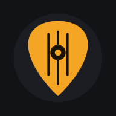
MARLI
Šta je novo u aplikaciji — sa snimcima ekrana i kratkim uputstvom.
What's new in the app — with screenshots and short how-tos.
2.5.65 Brže i lakše prstomFaster and easier to tap 26. 11. 2026.
Spisak pesama čita učenike, spremne pesme i „najviše sviram“ istovremeno, tačka „novo“ ne učitava celu listu novosti, a brisanje učenika ne čita sve pesme. Akordi iznad teksta, „Ne, hvala“ i „Pregled vežbanja“ imaju veću površinu za dodir (izgled isti), a − / + za tempo u igrama su veći (40 umesto 30 tačaka).
The song list reads students, ready songs and “most played” at the same time, the “new” dot does not load the whole news list, and removing a student no longer reads every song. Chords above the lyrics, “No, thanks” and “Practice overview” have a bigger tap area (same look), and − / + for tempo in the games are bigger (40 instead of 30 points).
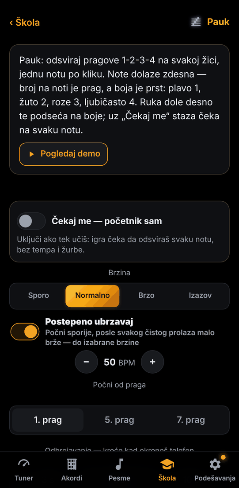
2.5.64 Popravke iz velike provereFixes from a big check-up 26. 11. 2026.
Kursevi: obrisana pesma izlazi i iz kursa („Poništi“ vraća oba), spajanje dve verzije pesme ostavlja kurs na pesmi koja ostaje, a kartica kursa više ne kaže „sve pesme su spremne“ kad sledeća fali — takva pesma je „Obrisana pesma · preskače se“ uz dugme Ukloni.
Pesme: prazna pesma nudi „Dodaj tekst“ (umesto puta kroz pesmu i Poslušaj bez ičega), pesma bez naslova je „Bez naslova“, dugačak naslov ima najviše 3 reda, dugačka reč ili link u tekstu se prelama, „Nema pesme“ izgleda kao ostatak aplikacije, a „‹ Pesme“ više ne pravi krug sa dugmetom nazad na Androidu.
Ostalo: loš ili zastareo link nastavnika kaže „Link nije ispravan“; Raspored ima tačne datume i posle promene vremena; Moji snimci (Samo sviraj) se sinhronizuju; dnevna kopija koristi tvoj datum (ne „juče“ posle ponoći); oštećena kopija više ne može da pokvari Učenike ili merenje vremena; vreme na sceni ide pravoj pesmi i kad je pesma iz set liste obrisana.
Courses: a deleted song also leaves its course (“Undo” brings both back), merging two versions of a song keeps the course on the song you kept, and the course card no longer says “all songs ready” when the next one is missing — such a song shows as “Deleted song · skipped” with a Remove button.
Songs: an empty song offers “Add lyrics” (instead of a learning path and Listen with nothing to play), a song without a title is “Untitled”, a long title takes at most 3 lines, a long word or link in lyrics wraps, “No song” looks like the rest of the app, and “‹ Songs” no longer loops with the Android back button.
Other: a bad or old teacher link says “Link is not valid”; Schedule shows the right dates after the clock change; My recordings (Just play) now sync; the daily copy uses your date (not “yesterday” after midnight); a damaged copy can no longer break Students or time tracking; stage time goes to the right song even when a song in the set list was deleted.
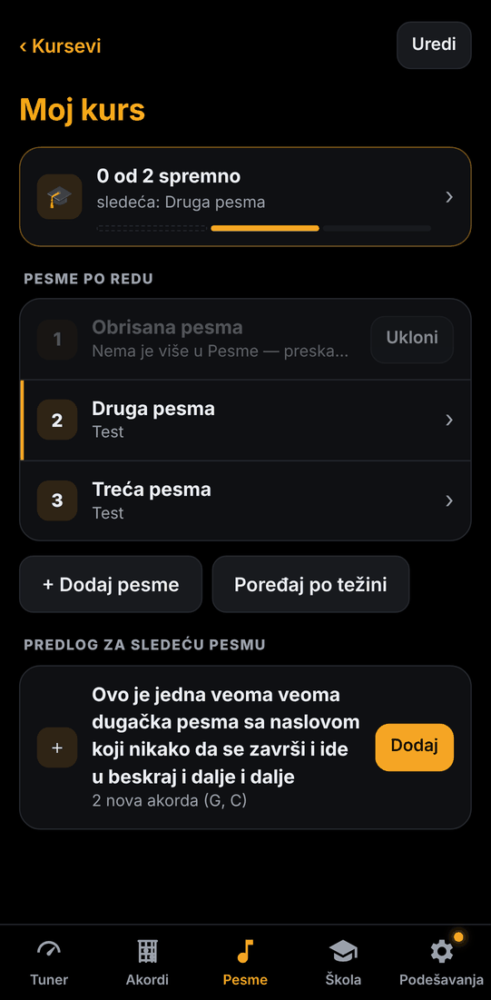
2.5.63 Manje opterećenja Google Drive-aLess load on Google Drive 26. 11. 2026.
Google Drive ima zajednički limit za sve korisnike aplikacije. Da do „Google je usporio“ ne bi dolazilo: sinhronizacija proverava na 2 min dok koristiš aplikaciju (do 10 min kad se ništa ne menja), brzo ponovno otvaranje ne pokreće novu proveru, napredak učenika (kod nastavnika) i plan (kod učenika) se ne čitaju pri svakom otvaranju, dnevna kopija ne traži isti folder i fajl dvaput, „Vrati sve“ ponovo šalje samo pesme koje se razlikuju, a kad Google kaže „uspori“, aplikacija odmah sačeka umesto da pokušava još tri puta. Tvoje izmene i dalje idu za nekoliko sekundi, a „Ne mogu da dođem“ i ostala obaveštenja stižu isto brzo.
Google Drive has one shared limit for all users of the app. To keep “Google slowed down” from happening: sync checks every 2 min while you use the app (up to 10 min when nothing changes), a quick reopen does not start a new check, student progress (teacher) and the plan (student) are not read on every open, the daily copy does not look up the same folder and file twice, “Restore all” re-sends only the songs that differ, and when Google says “slow down” the app waits right away instead of trying three more times. Your own changes still go within seconds, and “Can’t make it” and other notices arrive just as fast.
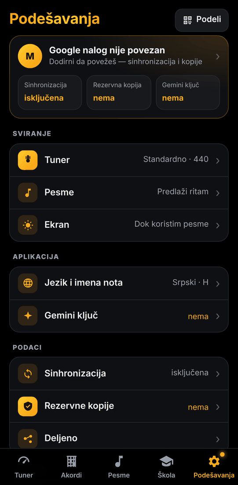
2.5.62 Lakši barré se premešta, kopija stiže i kad Drive usporiEasier barré can be moved, the copy arrives even when Drive slows down 26. 11. 2026.
U „Podešavanjima pesme“ red „Lakši hvatovi za barré“ je bio prilepljen uz „Lakša verzija“ i nije imao ≡. Sada je svoj red: premestiš ga gde hoćeš — i na vrh pesme, gde je čip „Lakši barré“ koji jednim dodirom uključi ili isključi male oblike.
In “Song settings”, the “Easier shapes for barré” row was stuck to “Easier version” and had no ≡. Now it is its own row: move it anywhere — also to the top of the song, where it becomes an “Easier barré” chip that turns the small shapes on or off with one tap.
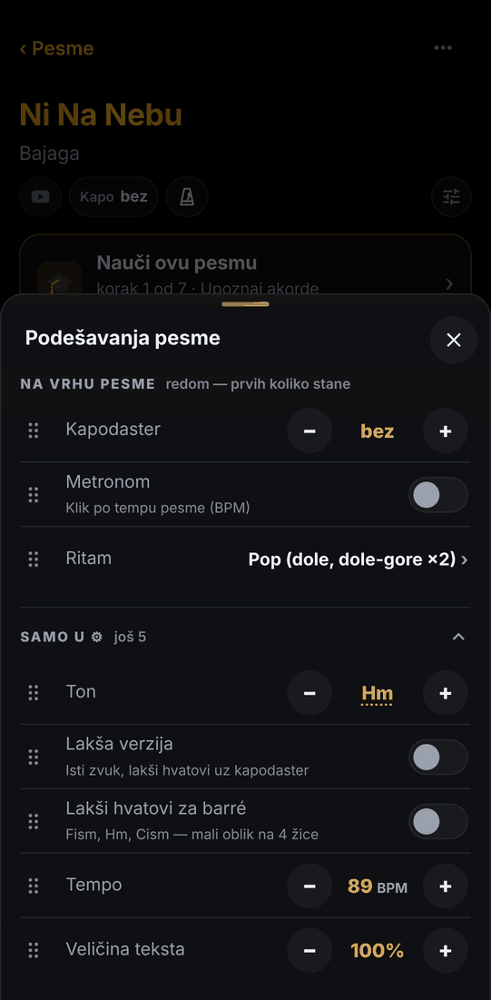
Kopija stiže i kad Drive uspori. Kad Google Drive privremeno uspori aplikaciju, „Sačuvaj sve“ ranije je samo pisalo „pokušaću kasnije“. Sada se kopija zaista sama sačuva čim Drive dozvoli (obično za nekoliko minuta), tiho, i javi „Kopija je sačuvana na Google Drive“. Sinhronizacija šalje izmene malo sporije, da do usporavanja ređe dolazi.
The copy arrives even when Drive slows down. When Google Drive temporarily slowed the app down, “Save all” used to just say “I'll try later”. Now the copy really saves itself as soon as Drive allows (usually in a few minutes), quietly, and tells you “The copy is saved to Google Drive”. Sync sends changes a bit more slowly so the slowdown happens less often.
2.5.61 Čas u Google kalendarLesson in Google Calendar 26. 11. 2026.
„Dodaj u kalendar“ na kartici sledećeg časa sada nudi Google kalendar: otvara se već popunjen čas — naslov, dan, vreme, trajanje i ponavljanje (svake nedelje ili na dve) — i samo tapneš Sačuvaj. Nema fajla koji treba uvesti i nema novih dozvola. Za Apple ili Outlook kalendar ostaje „Drugi kalendar“ (fajl za uvoz). Nastavnik dobija isti izbor kad sačuva termin uz „Dodaj u moj kalendar“. Ako se čas pomeri ili otkaže, aplikacija te obavesti — kalendar tada promeniš sam.
“Add to calendar” on the next-lesson card now offers Google Calendar: it opens with the lesson already filled in — title, day, time, length and repeat (every week or every two) — and you just tap Save. No file to import and no new permissions. For Apple or Outlook there is still “Other calendar” (a file to import). Teachers get the same choice when they save a lesson time with “Add to my calendar”. If a lesson is moved or cancelled, the app tells you — then you change the calendar yourself.
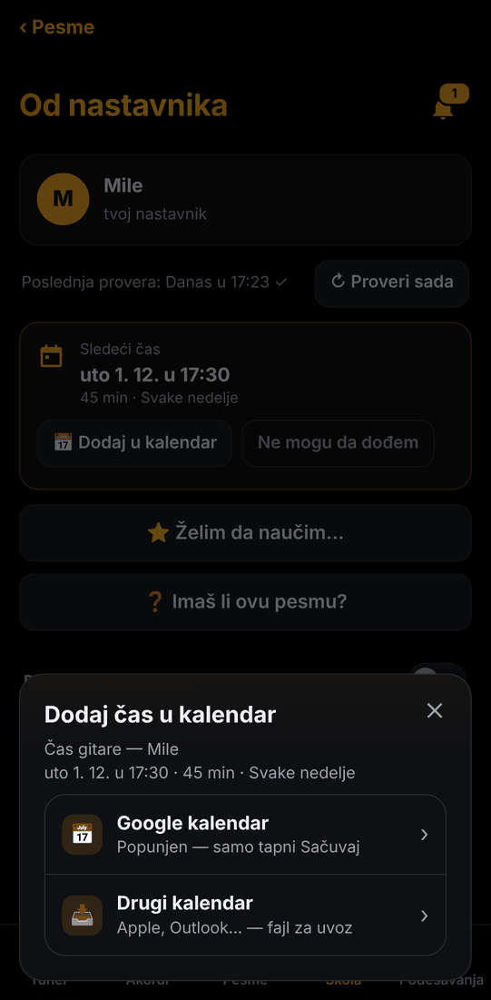
2.5.6 Jedno odbrojavanjeOne countdown 26. 11. 2026.
Uz „Počni“ biraš 3, 5 ili 10 sekundi. Dok je telefon uspravan ništa ne broji — odbrojavanje kreće tek kad ga okreneš: 5 · 4 · 3 · 2 · 1 · Kreni, a poslednji brojevi su klikovi metronoma, pa ulaziš tačno u ritam. Prvi akord je već na stazi. Dodir bilo gde = kreni odmah; vratiš li telefon uspravno, kreće ispočetka. Važi za sve igre na stazi.
Next to “Start” you choose 3, 5 or 10 seconds. Nothing counts while the phone is upright — the countdown starts only when you turn it: 5 · 4 · 3 · 2 · 1 · Go, and the last numbers are the metronome clicks, so you come in right on the beat. The first chord is already on the track. Tap anywhere = go now; turn the phone back upright and it starts over. For all games on the track.
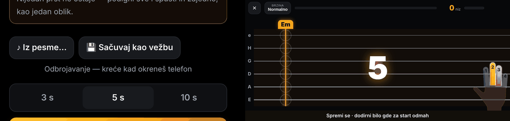
2.5.5 Hvatovi sa lista i prošireni akordiShapes from the sheet and extended chords 26. 11. 2026.
Hvat sa lista: kad list pokazuje hvat kog nema u biblioteci (Blackbird sa dve note, Everlong u Drop D…), pesma ga zadrži i pokazuje prvog — na toj pesmi i u njenim vežbama; rečnik akorda i druge pesme ostaju isti. Važi i za uvezene PDF listove. Palac se piše P.
Prošireni akordi (Em11, Am11, E11, Cmaj9, G13, Cadd11) se više ne skraćuju — „sve prazne žice“ u Let It Be je Em11. Power akordi (E5, B5…) sada rade i u vežbama. MARLI pesme više ne pitaju „Šta znači B“.
Shape from the sheet: when a sheet shows a shape the library does not have (Blackbird with two notes, Everlong in Drop D…), the song keeps it and shows it first — on that song and in its exercises; the chord dictionary and other songs stay the same. Imported PDF sheets too. The thumb is shown as T.
Extended chords (Em11, Am11, E11, Cmaj9, G13, Cadd11) are no longer shortened — “all open strings” in Let It Be is Em11. Power chords (E5, B5…) now work in exercises too. MARLI songs no longer ask what “B” means.
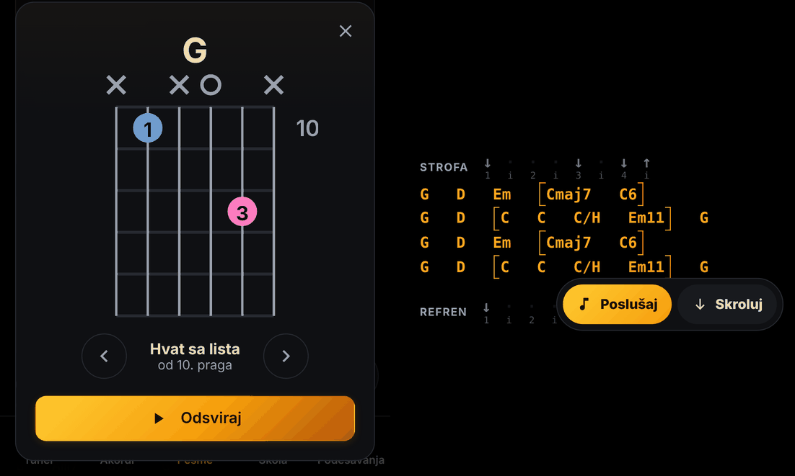
2.5.4 Dodatni časExtra lessons 26. 11. 2026.
Učenik ima stalni termin, a dogovorite još jedan čas? Upiši ga — aplikacija pita: dodatni čas samo jednom (stalni termin ostaje), još jedan stalni termin (npr. ponedeljak i četvrtak) ili promena stalnog. Dodatni čas je u Rasporedu sa oznakom „dodatni čas“, pomera se i otkazuje kao i ostali, ulazi u dolaske, a učenik dobija „Sledeći čas“.
A student has a regular time and you agree on one more lesson? Add it — the app asks: an extra lesson just once (the regular time stays), another regular time (e.g. Monday and Thursday) or a change of the regular time. The extra lesson is in Schedule marked “extra lesson”, can be moved and cancelled like the others, counts in attendance, and the student gets “Next lesson”.
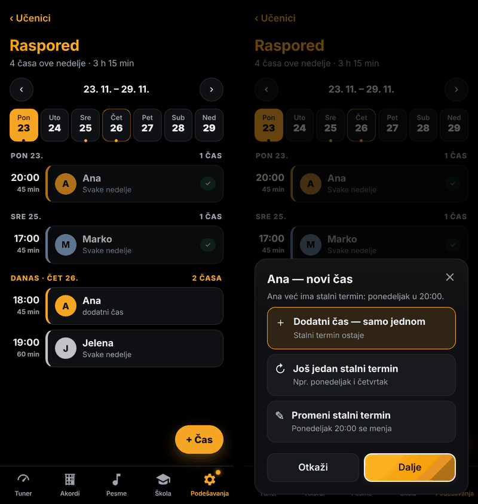
2.5.3 Ruka sa strane dlanaThe hand from the palm side 26. 11. 2026.
Ruka u legendi prstiju i u igrama sada izgleda kao tvoja leva ruka na vratu kad je gledaš: palac levo, prsti 1 · 2 · 3 · 4 sleva nadesno. Brojevi ostaju čitljivi, a u igri se i dalje pali prst koji treba.
The hand in the finger legend and in the games now looks like your left hand on the neck as you see it: thumb on the left, fingers 1 · 2 · 3 · 4 from left to right. The numbers stay readable, and in the game the right finger still lights up.
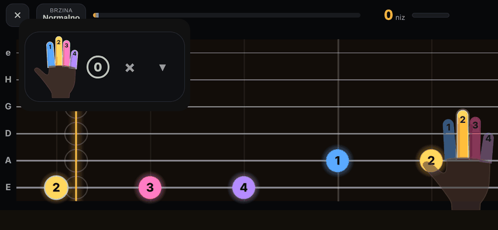
2.5.2 MARLI putMARLI path 26. 11. 2026.
MARLI put — 30 pesama u tri nivoa, od prvih akorada (Chasing Cars, Knockin’ On Heaven’s Door) do barréa i Travis trzanja (Landslide, Blackbird). Pesme stižu same u Pesme, sa malim MARLI znakom; čip „MARLI put“ pokazuje samo njih. Nivoi su u Škola → Kursevi, sa napretkom, i ništa nije zaključano. Svaka pesma ima kapodaster, ritam i hvatove kao na listu, a reči dodaje „Pronađi tekst“.
Saveti sa lista zamenjuju engleske beleške: Novo u pesmi, Pazi na i Vežbaj vode pravo u vežbu. Spisak pesama je mirniji (bez tonaliteta i kapodastera), a na pesmi su gore samo Kapo, metronom i ritam. Novo: hvatovi za akorde sa basom (G/F#…), power akordi i četiri ritma sa listova.
MARLI path — 30 songs in three levels, from first chords (Chasing Cars, Knockin’ On Heaven’s Door) to barré and Travis picking (Landslide, Blackbird). The songs arrive in Songs by themselves, with a small MARLI mark; the “MARLI path” chip shows only them. The levels are in School → Courses, with progress, and nothing is locked. Every song has the capo, strum and shapes from the sheet, and “Find lyrics” adds the words.
Tips from the sheet replace the notes: New in this song, Watch out for and Practise lead straight into an exercise. The song list is calmer (no key or capo), and the top of a song shows only Capo, metronome and strum. New: shapes for slash chords (G/F#…), power chords and four strums from the sheets.
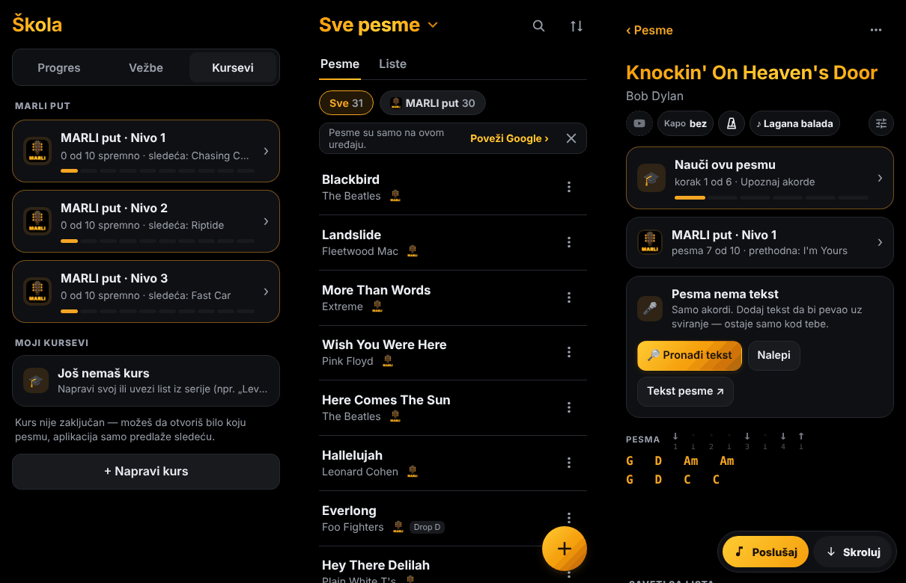
2.5.1 Kopije i sinhronizacija nose sveBackups and sync carry everything 26. 11. 2026.
Rezervna kopija cele aplikacije sada vraća i sve novo: korake puta kroz pesmu, hvatove sa listova, kurseve i MARLI put, komentare na snimke, akorde koje znaš i slike učenika. Novi test svaki put pravi kopiju, briše sve i vraća — i proverava da ništa ne fali.
Sinhronizacija šalje samo ono što se promenilo: slike učenika idu svaka za sebe, pa beleška ili prisustvo više ne šalju ponovo sve slike. Dnevne kopije na Drive-u su sažete (biblioteka od 300 pesama: oko 1,4 MB → 0,1 MB) i čuva ih jedan uređaj dnevno. Stare veze bez sinhronizacije prelaze na nju same, bez ikakvog prozora.
Full-app backups now restore everything new too: the steps on the path through a song, shapes from sheets, courses and the MARLI path, comments on recordings, the chords you know and student pictures. A new test makes a backup, wipes everything and restores it every time — and checks nothing is missing.
Sync sends only what changed: student pictures travel one by one, so a note or attendance no longer re-sends every picture. Daily copies on Drive are compressed (a 300-song library: about 1.4 MB → 0.1 MB) and saved by one device a day. Old connections without sync switch to it by themselves, without any window.
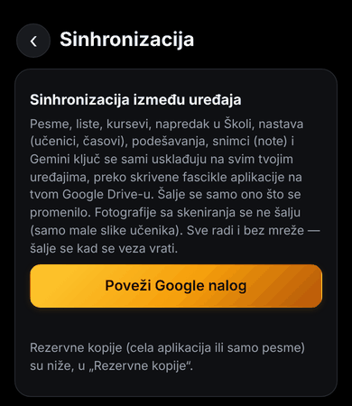
2.5 Škola i ListeSchool and Lists 26. 11. 2026.
Škola — kartica Vežbe dobila je novo ime i tri dela: Progres (preporuka za danas, tvoja nedelja, niz, nastavnik, moje pesme), Vežbe (igre, iste kao do sada) i Kursevi (MARLI put, kursevi od nastavnika i tvoji). Aplikacija pamti koji deo si poslednji otvorio.
Pesme · Liste — folderi i setliste su na jednom mestu. Pametne liste se prave same (Najviše sviram, Spremne, Nedavno, Od nastavnika, TAB), pesme iz kurseva imaju svoje liste, a tvoje su u Mojim listama. Na Pesmama ostaju „Sve“ i do 3 čipa po izboru.
Dugi pritisak na listu ili čip (desni klik na računaru): preimenuj, prikaži ili sakrij kao čip, napravi setlistu, obriši. Pri brisanju biraš samo listu ili listu i pesme; pesme koje su i drugde nisu označene, a „Poništi“ vraća sve. Pesme pokazuju odakle su: MARLI znak, 🎓 od nastavnika, 📚 tvoj kurs.
School — the Exercises tab has a new name and three parts: Progress (today’s suggestion, your week, streak, teacher, my songs), Exercises (the games, same as before) and Courses (MARLI path, courses from your teacher and your own). The app remembers which part you opened last.
Songs · Lists — folders and setlists are in one place. Smart lists build themselves (Most played, Ready, Recent, From teacher, TAB), songs from courses get their own lists, and yours are under My lists. Songs keeps “All” and up to 3 chips of your choice.
Long-press a list or chip (right-click on a computer): rename, show or hide as chip, make a setlist, delete. When deleting you choose just the list or the list and its songs; songs that are also elsewhere are left unchecked, and “Undo” brings everything back. Songs show where they come from: MARLI mark, 🎓 from teacher, 📚 your course.
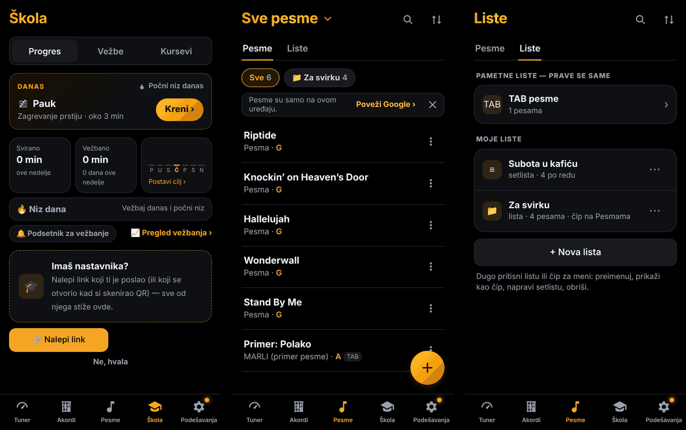
2.4.37 Kursevi i Pronađi tekstCourses and Find lyrics 26. 11. 2026.
Kursevi — treća kartica u Pesmama. Kurs je spisak pesama za učenje po redu, sa napretkom: koje su spremne, gde si u kojoj, koja je sledeća. Ništa nije zaključano. Kad praviš kurs, aplikacija predlaže sledeću pesmu i kaže zašto (novi akordi, barré, isti ritam), a može i da poređa pesme po težini. Na putu kroz pesmu vidi se kurs i „Sledeća u kursu“.
Listovi iz serije („Level 2 · Song 4 of 10“) sami prave kurs i pesma ide na svoje mesto. Uvoz čita i nove oblike listova (petlja, akordi nad brojanjem, ×N, napomene uz delove), a iz izmenjenog PDF-a samo vidljiv tekst.
Pronađi tekst: pesma bez teksta jednim dodirom dobija tekst iz otvorene baze, akordi se rasporede po delovima, proveriš pa sačuvaš — ili nalepiš svoj. Tekst ostaje samo u tvojoj pesmi.
Courses — a third tab in Songs. A course is a list of songs to learn in order, with progress: which are ready, where you are in each, which is next. Nothing is locked. When you build a course the app suggests the next song and says why (new chords, barré, same strum), and can sort songs by difficulty. The path through a song shows the course and “Next in course”.
Series sheets (“Level 2 · Song 4 of 10”) build their course by themselves and the song lands in its place. The import also reads new sheet layouts (a loop, chords over counts, ×N, notes on parts), and only the visible text of edited PDFs.
Find lyrics: a song without lyrics gets them in one tap from an open database, the chords are placed part by part, you check and save — or paste your own. Lyrics stay only in your song.
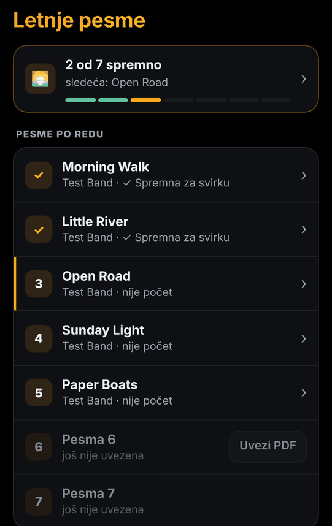
2.4.36 Video uz uvezen listVideo with an imported sheet 26. 11. 2026.
Ako list akorada (PDF) ima YouTube link (klikabilan ili ispisan), uvoz ga sam poveže uz pesmu: lekcija („learn it with me“, tutorijal) ide u Tutorijal na putu kroz pesmu, a snimak za sviranje („play along with the record“) u Uz video. Ako link ne postoji, odmah posle čuvanja aplikacija pita da li hoćeš da dodaš video lekciju ili snimak za sviranje — isti izbor kao i inače (pretraga ili nalepi link), ili „Kasnije“.
If a chord chart (PDF) has a YouTube link (clickable or written out), the import links it to the song: a lesson (“learn it with me”, tutorial) goes to Tutorial on the path through the song, and a recording to play along with (“play along with the record”) goes to Play along. If there is no link, right after saving the app asks whether you want to add a video lesson or a recording to play along with — the usual picker (search or paste a link), or “Later”.
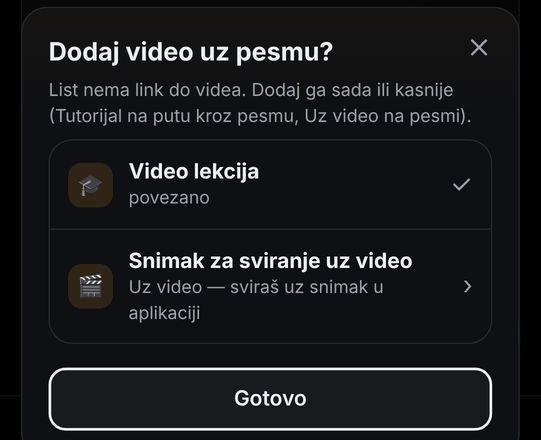
2.4.35 PDF lista akorada — uzima sve sa listaChord-chart PDFs — everything on the sheet 26. 11. 2026.
Uvoz lista akorada sada čita i nacrtano: strelice ritma (↓ ↑ iznad „1 2 & 3 & 4 &“, crtica = pauza) postaju ritam pesme — ako je to poznat obrazac, dobija njegovo ime (npr. Folk) — a dijagrami akorada postaju hvatovi pesme, baš kako ih nastavnik uči (npr. G sa 3. pragom na h žici, Fmaj7 sa basom C). Važi i u svim vežbama te pesme. Svaka kućica na listu je jedan prolaz ritma.
Saveti sa lista postaju vežbe: „Practise this“ sa nizom akorada je korak „Sa lista“ na putu kroz pesmu, a promena iz „Watch out for“ (npr. E7 posle G) dolazi prva u „Najteže promene“.
Importing a chord chart now also reads what is drawn: the strum arrows (↓ ↑ above “1 2 & 3 & 4 &”, a dash = rest) become the song’s strum — if it is a known pattern it gets its name (e.g. Folk) — and the chord diagrams become the song’s shapes, exactly as the teacher teaches them (e.g. G with the 3rd fret on the B string, Fmaj7 with a C bass). This applies in all of the song’s exercises. Each box on the sheet is one go of the strum.
Tips on the sheet become exercises: “Practise this” with a chord sequence is a “From the sheet” step on the path through the song, and a change from “Watch out for” (e.g. E7 after G) comes first in “Hardest changes”.
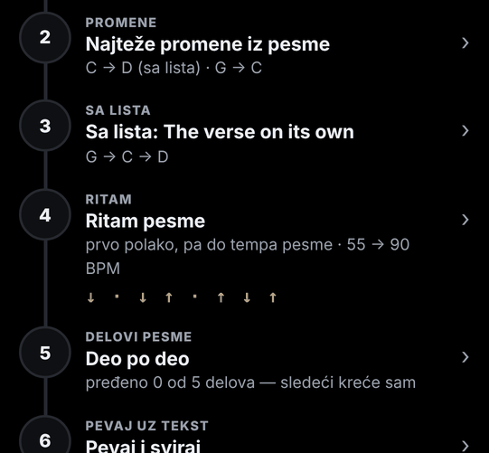
2.4.34 Brže i stabilnijeFaster and more stable 26. 11. 2026.
Merenja na usporenom procesoru (kao slabiji telefon, 300 pesama): ekran pesme učitava 36 KB koda umesto 121 KB — vežbe i prozor za poređenje se učitavaju tek kad zatrebaju. Nijedan zadatak ne blokira ekran duže od 0,1 s. Ispravljeno gomilanje slušalaca pri dugom vežbanju (novi test proverava da se posle više krugova ništa ne gomila) i nekoliko stvari koje na starijim telefonima nisu radile.
Measured with a slowed-down CPU (like a cheaper phone, 300 songs): the song screen loads 36 KB of code instead of 121 KB — exercises and the compare window load only when needed. No task blocks the screen for more than 0.1 s. Fixed listeners piling up during long practice (a new test checks that nothing piles up after several rounds) and a few things that didn’t work on older phones.
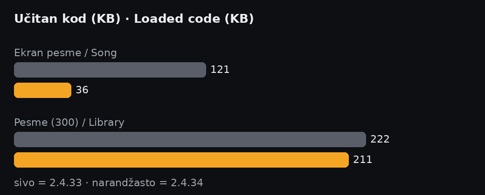
2.4.33 Barré, lakši hvatovi i PDF sa listom akoradaBarré, easier shapes and chord-chart PDFs 26. 11. 2026.
Nova vežba Barré: samo kažiprst preko žica, pa mali hvat, pa ceo akord — žicu po žicu, aplikacija sluša da li svaka zazvoni — i na kraju promene u barré i nazad. Iz pesme dobija njene barré akorde, a na putu kroz pesmu je korak „Barré akordi“.
New exercise Barré: only the index finger across the strings, then the small shape, then the full chord — string by string, the app listens whether each one rings — and finally changes into the barré and back. From a song it gets that song’s barré chords, and the path through the song has a “Barré chords” step.
Lakši hvatovi (mali oblik na 4 žice) za F, Bm, B, F#m, Cm, Gm, C#m i Fm su uvek tu: na pesmi ⚙ → „Lakši hvatovi za barré“. PDF sa listom akorada (delovi u kućicama, ×2, redosled, kapodaster, saveti) postaje pesma.
Easier shapes (a small 4-string form) for F, Bm, Bb, F#m, Cm, Gm, C#m and Fm are always there: on a song ⚙ → “Easier shapes for barré”. A chord-chart PDF (parts in boxes, ×2, play-through order, capo, tips) becomes a song.
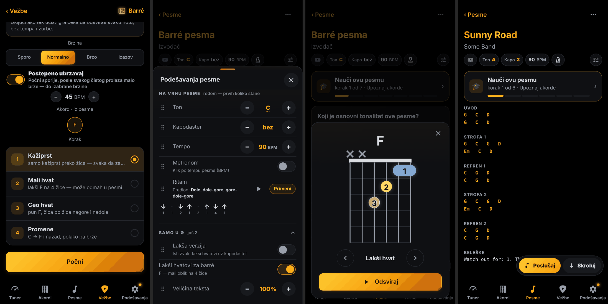
2.4.32 Dolasci na časoveLesson attendance 25. 11. 2026.
Za nastavnike: kod svakog učenika „Dolasci na časove“ po mesecima — bio/la, nije došao/la, otkazano. Sami se popunjavaju iz rasporeda (prošli časovi = bio/la, otkazani = otkazano, čas sa beleškom = bio/la), a jednim dodirom menjaš oznaku. „+ Dodaj čas“ je za čas van rasporeda; dole je pregled poslednjih 6 meseci. U Rasporedu prošao čas nudi „Bio/la je“ i „Nije došao/la“.
For teachers: every student has “Lesson attendance” by month — came, missed, cancelled. It fills itself from the schedule (past lessons = came, cancelled = cancelled, a lesson with a note = came), and one tap changes a mark. “+ Add a lesson” is for a lesson outside the schedule; below are the last 6 months at a glance. In the Schedule a past lesson offers “Came” and “Missed”.
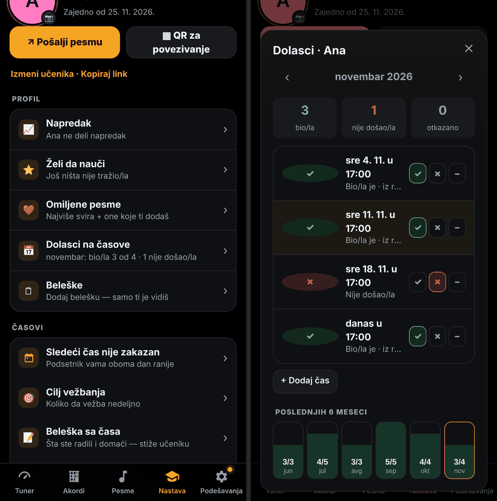
2.4.31 Nauči ovu pesmuLearn this song 25. 11. 2026.
Za svaku pesmu aplikacija sama sastavi put kroz pesmu iz onoga što je u njoj: upoznaj akorde (samo nove, uz akord koji već znaš), najteže promene, ritam pesme (od sporog do tempa), deo po deo, pevanje uz tekst i celu pesmu u tempu — čisto znači spremna ✓. Tutorijal na YouTube-u je po želji. Ništa nije zaključano: aplikacija predlaže korak, a možeš da otvoriš bilo koji.
For every song the app builds a path through the song from what is in it: get to know the chords (only new ones, next to a chord you know), the hardest changes, the song’s rhythm (slow up to tempo), part by part, singing along and the whole song at tempo — clean means ready ✓. A YouTube tutorial is optional. Nothing is locked: the app suggests a step and you can open any of them.
Na vrhu je „Prošli put“ (poslednja vežba, rezultat, Ponovi / Sledeće). Na ekranu pesme: „Nauči ovu pesmu“ sa korakom i trakom napretka, i „▶ odavde“ uz svaki deo — pevanje uz tekst od tog dela do kraja.
At the top is “Last time” (your last exercise, score, Again / Next). On the song screen: “Learn this song” with the step and a progress bar, and “▶ from here” next to each part — sing along from that part to the end.
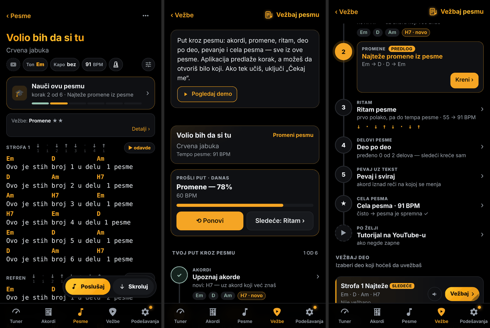
2.4.30 „Uporedi“ radi“Compare” works 25. 11. 2026.
Popravka: kod pesme sa predloženim ritmom („Ritam?“) dugme „Uporedi“ je otvaralo crn ekran. Sada se poređenje dve verzije otvara normalno (kao na slici), a ako nešto ipak ne uspe — prozor se zatvori i javi grešku.
Fix: for a song with a suggested rhythm (“Rhythm?”), the “Compare” button opened a black screen. Comparing two versions now opens normally (as in the picture), and if something still fails the window closes and reports an error.
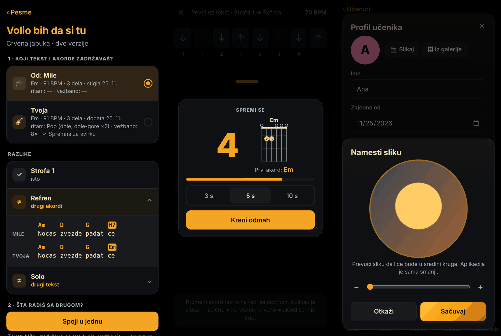
2.4.29 Slika učenika i novi izgledStudent photo and a new look 25. 11. 2026.
Popravka: prozor za izrez slike učenika se otvarao ispod profila, pa se nije video. Sada je uvek na vrhu — kao i svaki prozor otvoren iz drugog prozora. Izrez ima veći krug, uputstvo i uvećanje − / +.
Fix: the student photo crop window opened behind the profile, so it couldn’t be seen. It is now always on top — like every window opened from another window. The crop has a bigger circle, a hint and − / + zoom.
Isti izgled kao ostatak aplikacije: „Dve verzije“ (redovi u grupama), „Spremi se“ (hvat prvog akorda, traka, 3 / 5 / 10 s) i pregled u „Pevaj uz tekst“ (akordi iznad teksta). Na kartici nedelje „Svirano … od prošle“ sada poredi samo svirano, a niz u „Danas“ je isti kao „🔥 dana zaredom“.
Same look as the rest of the app: “Two versions” (grouped rows), “Get ready” (first chord shape, a bar, 3 / 5 / 10 s) and the “Sing along” preview (chords above the lyrics). In the week card “Played … vs last week” now compares played time only, and the streak in “Today” matches “🔥 days in a row”.
2.4.28 Slika učenika ostajeStudent photo stays 25. 11. 2026.
Popravka: slika učenika iz galerije sada sigurno ostaje na kartonu — čuva se odmah posle izreza (i kad se profil zatvori bez „Sačuvaj“), a prevlačenje slike koje se završi van kvadrata više ne zatvara prozor. Slika stoji umesto početnog slova na kartonu i u listi učenika. Isto važi za sve prozore: zatvaraju se dodirom van njih samo ako je dodir i počeo van njih.
Fix: a student photo from the gallery now reliably stays on the card — it is saved right after cropping (even if the profile is closed without “Save”), and dragging the photo and letting go outside the square no longer closes the window. The photo replaces the initial on the card and in the student list. The same goes for all windows: they close on a tap outside only if the tap also started outside.
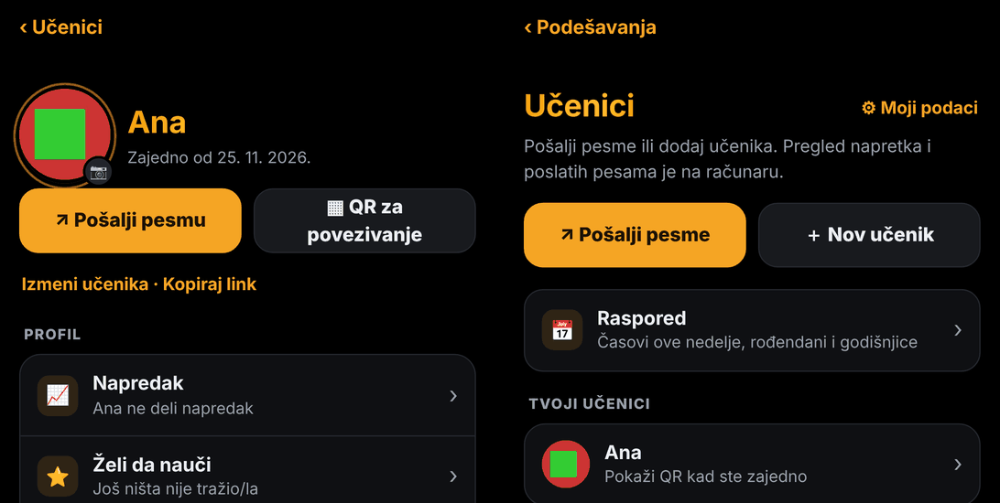
2.4.27 Dve verzije iste pesmeTwo versions of the same song 25. 11. 2026.
Kad imaš istu pesmu dvaput — najčešće od nastavnika i svoju — na vrhu Pesama i na samoj pesmi piše „Uporedi“. Prvo izabereš čiji tekst i akorde zadržavaš (kartice pokazuju ton, delove, ritam i koliko si vežbao), a ispod su razlike po delovima: dodir na deo pokaže redove jedan ispod drugog, sa drugačijim akordima označenim.
When you have the same song twice — usually the teacher’s and yours — the top of Songs and the song itself show “Compare”. First you pick whose lyrics and chords to keep (the cards show key, parts, rhythm and how much you practised), and below are the differences per part: tap a part to see the lines one under the other, with the different chords highlighted.
Zatim: Spoji u jednu (izabran tekst, a ostaje sve tvoje — vežbanje, ✓ spremna, ritam, snimak, folderi i setliste; pesma ostaje povezana sa nastavnikom), Zadrži samo izabranu ili Ostavi obe. Svaka odluka ima „Poništi“, a stari tekst ostaje u „Prethodnim verzijama“.
Then: Merge into one (the chosen lyrics, and everything of yours stays — practice, ✓ ready, rhythm, video, folders and setlists; the song stays linked to the teacher), Keep only the chosen one or Keep both. Every choice has “Undo”, and the old lyrics stay in “Previous versions”.
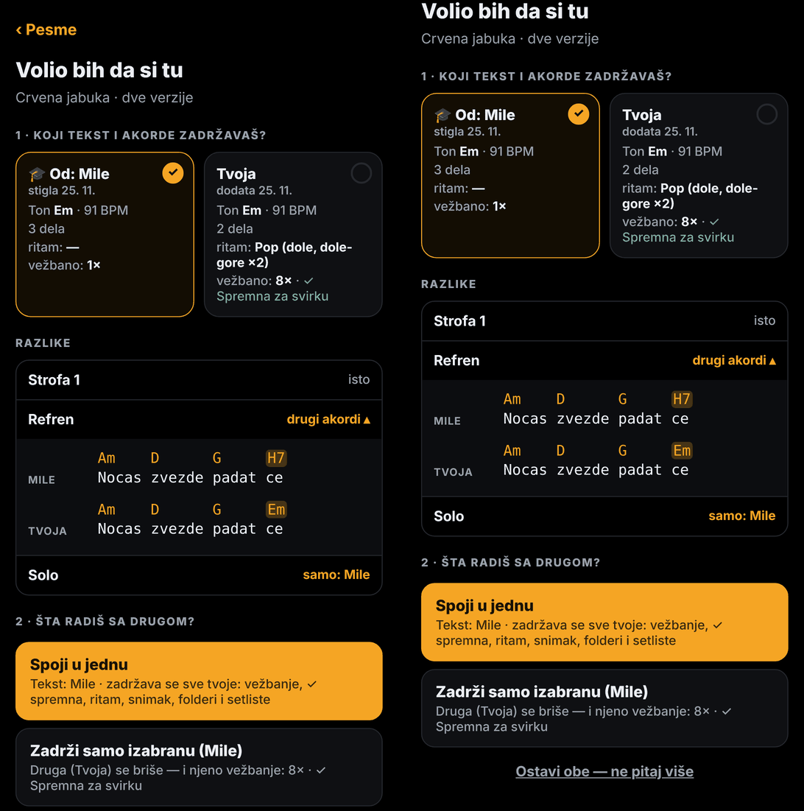
2.4.26 Pevaj uz tekst — duže, uz odbrojavanjeSing along — longer, with a countdown 25. 11. 2026.
Pevaj uz tekst: dodirni prvi pa poslednji deo (npr. Strofa 1 → Strofa 2) i sviraš sve između, i instrumental. „Cela pesma“ ide redom, sa ponovljenim refrenom, a iznad teksta piše koji je deo. Prikazani su samo delovi sa tekstom, a akord više ne prekriva reč.
Sing along: tap the first and then the last part (e.g. Verse 1 → Verse 2) and you play everything in between, instrumentals included. “Whole song” goes in order, with repeated choruses, and the part name shows above the lyrics. Only parts with lyrics are listed, and the chord no longer covers the word.
„Spremi se“: posle „Počni“ u vežbama iz pesme ide odbrojavanje 5…1 sa prvim akordom — dodir = kreni odmah. Kartica „Ritam?“ na pesmi sada staje na svaki telefon (ceo naziv, strelice ↓ ↑, Primeni / Promeni…).
“Get ready”: after “Start” in song exercises there is a 5…1 countdown with the first chord — tap to start now. The “Rhythm?” card on a song now fits every phone (full name, ↓ ↑ arrows, Apply / Change…).
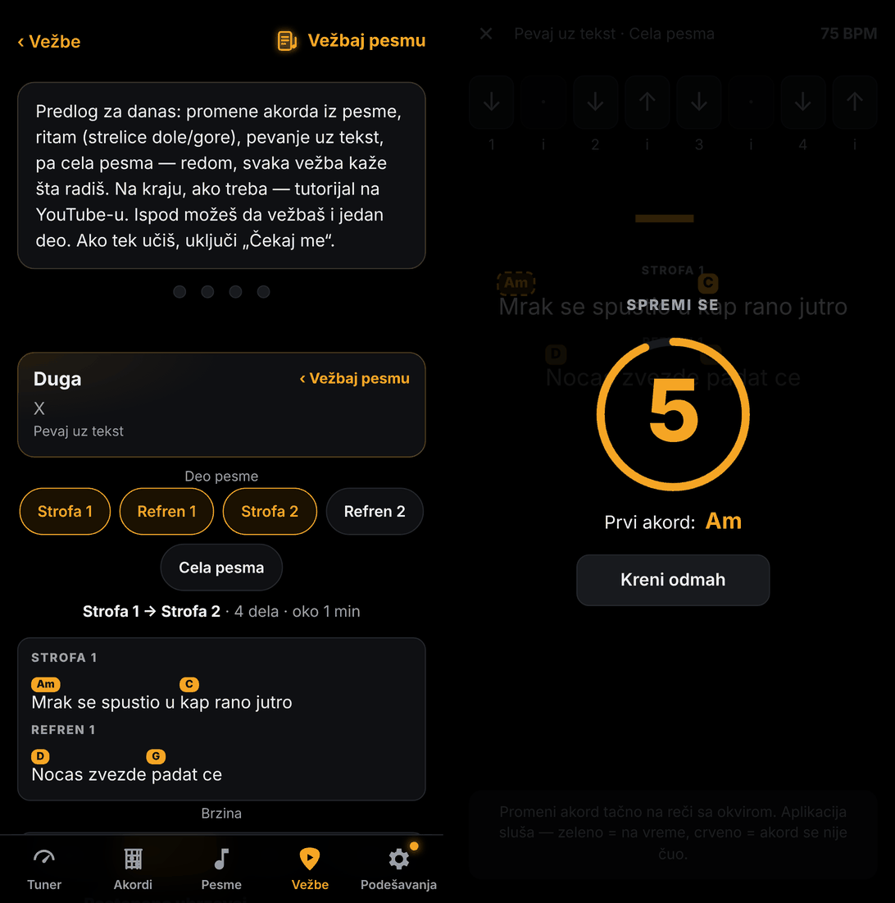
2.4.25 Pesme od učenika — jednim fajlomSongs from students — in one file 25. 11. 2026.
Kad učenik pošalje pesmu nastavniku — „Pošalji nastavniku“ ili „Proveri sa nastavnikom“ — pesma sada ide u samom fajlu napretka, isto kao pesme od nastavnika ka učeniku (2.4.14): bez posebnog deljenog fajla i dozvola na Google Drive-u. Nastavnik je dobija kod tog učenika (zahtev „proveri“ ili u pesmama), a učenik dobija „primio ✓“. Snimci (zvuk) su veći i idu kao i do sada.
When a student sends a song to the teacher — “Send to teacher” or “Check with teacher” — the song now travels inside the progress file, just like songs from teacher to student (2.4.14): no separate shared file or permissions on Google Drive. The teacher gets it under that student (a “check” request or in songs), and the student gets “received ✓”. Recordings (audio) are bigger and go as before.
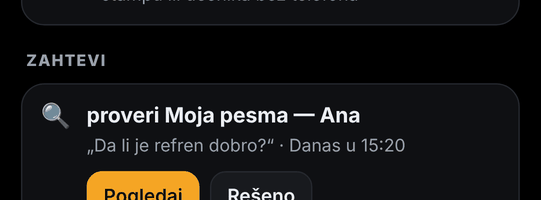
2.4.24 Raspored časovaLesson schedule 25. 11. 2026.
Nastava → „Raspored“: nedelja sa časovima svih učenika (danas istaknut), rođendani 🎂 i godišnjice 🤝 na svom danu. Na telefonu biraš dan, na računaru vidiš mrežu po satima. Dodir na čas: otvori učenika, pomeri ili otkaži taj čas — učenik dobija obaveštenje.
Teaching → “Schedule”: the week with all students’ lessons (today highlighted), birthdays 🎂 and anniversaries 🤝 on their day. On a phone you pick a day, on a computer you see a grid by hour. Tap a lesson: open the student, move or cancel that lesson — the student gets a notification.
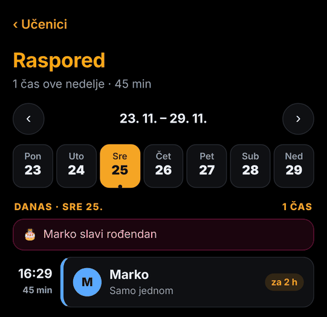
Redovan termin za svakog učenika (dan, vreme, trajanje, ponavljanje): sledeći čas se sam popunjava i stiže učeniku, sa podsetnikom dan ranije. „Dodaj u kalendar telefona“ pravi događaj koji se ponavlja — telefon podseća i kad je aplikacija zatvorena.
A regular time for each student (day, time, length, repeat): the next lesson fills in by itself and reaches the student, with a reminder the day before. “Add to the phone calendar” creates a repeating event — the phone reminds you even when the app is closed.
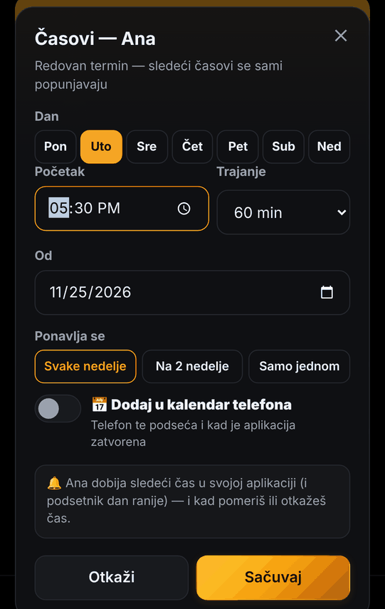
Učenik na kartici „Sledeći čas“ ima „Dodaj u kalendar“ i „Ne mogu da dođem“ (nastavniku stiže 🔔).
On the Next lesson card the student has “Add to calendar” and “I can’t make it” (the teacher gets a 🔔).
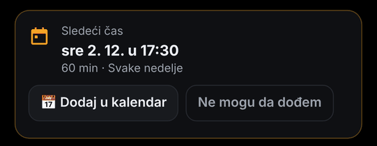
2.4.23 Profil učenika, rođendani i godišnjiceStudent profile, birthdays and anniversaries 25. 11. 2026.
Stranica učenika sada ima profil: sliku (dodir na krug — slikaj ili izaberi iz galerije; aplikacija je sama smanji na ~30 KB i iseče u krug), koliko ste zajedno, rođendan (godina nije obavezna), a u odeljku „Profil“: napredak, šta učenik želi da nauči, omiljene pesme (one koje najviše svira — same, plus one koje dodaš) i beleške.
The student’s page now has a profile: a photo (tap the circle — take one or pick from the gallery; the app shrinks it to ~30 KB and crops it to a circle), how long you’ve worked together, birthday (year optional), and under “Profile”: progress, what the student wants to learn, favourite songs (the ones they play most — automatically, plus the ones you add) and notes.
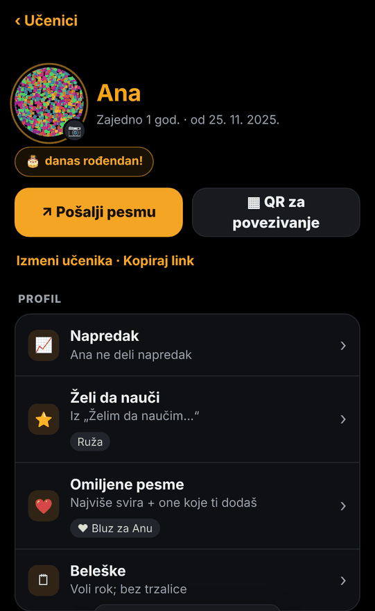
🔒 Slika, rođendan i beleške ostaju samo kod nastavnika (na uređaju i njegovom Google Drive-u) — učenik ih ne vidi. U zvoncu stižu podsetnici: rođendan i godišnjica saradnje.
🔒 The photo, birthday and notes stay with the teacher only (on the device and their Google Drive) — the student doesn’t see them. The bell brings reminders: birthday and anniversary of working together.
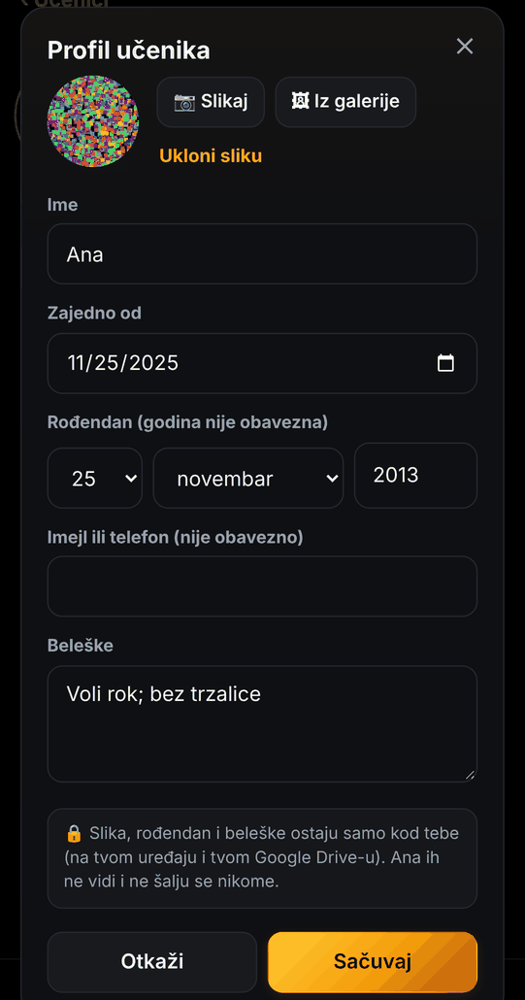
2.4.22 Moje vežbanje — i nastavnik vidi isti pregledMy practice — and the teacher sees the same overview 25. 11. 2026.
Moje vežbanje (Vežbe → „Pregled vežbanja“, ili „Od nastavnika“): nedelja, mesec ili sve — ukupno vreme i razlika prema prethodnom periodu, dani vežbanja i niz 🔥, stubići po danu (zlatno sviranje pesama, zeleno vežbe i igre), pesme sa vremenom i zvezdicama po vežbi i igre. Sve se beleži samo.
My practice (Practice → “Practice overview”, or From teacher): week, month or all — total time and the change from the previous period, practice days and streak 🔥, bars per day (gold for playing songs, green for exercises and games), songs with time and stars per exercise, and games. Everything is recorded by itself.
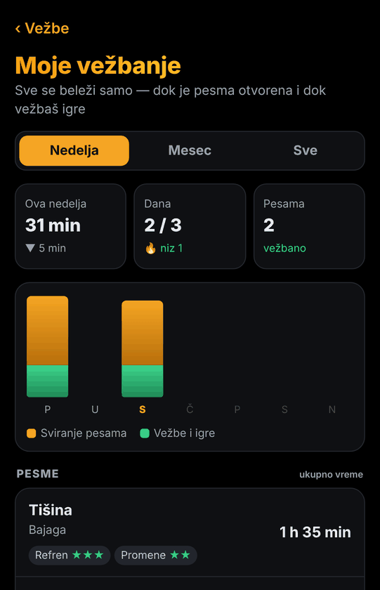
Kad učenik uključi „Deli napredak“, nastavnik na stranici učenika ima „Vežbanje — pregled“ — isti ekran, sa domaćim umesto broja pesama. Opis deljenja je ažuriran: nastavnik vidi i nazive pesama koje učenik vežba, ali ne tekst pesama ni snimke koje mu učenik nije poslao.
When a student turns on Share progress, the teacher has “Practice — overview” on the student’s page — the same screen, with homework instead of the song count. The sharing description is updated: the teacher also sees the names of songs the student practises, but not song text or recordings the student didn’t send.
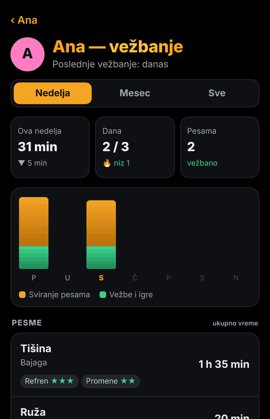
2.4.21 Obaveštenja i tura posle povezivanja, „Najviše sviram“Notifications and a tour after connecting, “Most played” 25. 11. 2026.
Kad se nastavnik i učenik povežu, oboje dobiju obaveštenje 🔔 i kratku turu u 4 koraka — šta sad mogu jedno sa drugim (učenik je može ponovo otvoriti: „Šta sve mogu sa nastavnikom?“). Nastavnik vidi kad učenik primi poslate pesme, a učenik kad nastavnik primi njegov snimak.
When a teacher and student connect, they both get a notification 🔔 and a short 4-step tour — what they can now do together (the student can reopen it: “What can I do with my teacher?”). The teacher sees when the student receives the songs, and the student when the teacher receives their recording.
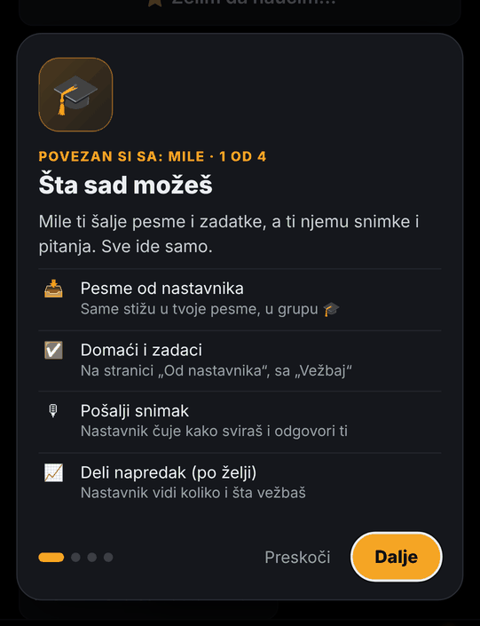
U Pesmama je nova grupa „🔥 Najviše sviram“: pesme poređane po vremenu sviranja i vežbanja (bar 3 minuta), sa vremenom pored svake. Na stranici povezanog učenika više nema velikog QR dugmeta — „Ponovo poveži“ je u „Izmeni učenika“.
Songs has a new “🔥 Most played” group: songs ordered by time spent playing and practising (at least 3 minutes), with the time next to each. A connected student’s page no longer has the big QR button — “Connect again” is under “Edit student”.
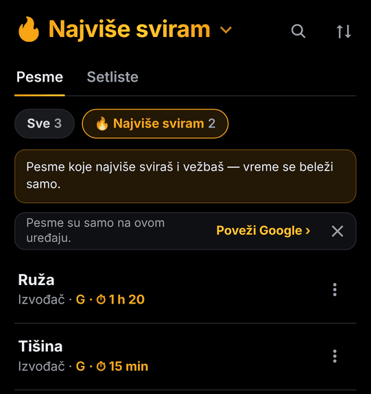
2.4.20 Videi na jednom mestu — u čipu ▶Videos in one place — the ▶ chip 25. 11. 2026.
Dodir na čip ▶ na pesmi nudi „Snimak — sviraj uz njega“ (pesma prati video u istoj maloj traci kao do sada) ili „Tutorijal — nauči pesmu“ (otvara se YouTube). Svaki ima svoje „Promeni“. Zlatan čip znači da je video povezan, isprekidan da još nije. U meniju ⋯ više nema „Video i tutorijal“.
Tapping the ▶ chip on a song offers “Video — play along” (the song follows the video in the same small bar as before) or “Tutorial — learn the song” (opens YouTube). Each has its own “Change”. A gold chip means a video is linked, a dashed one that it isn’t yet. The ⋯ menu no longer has “Video and tutorial”.
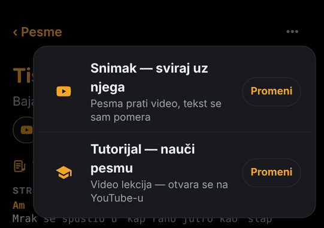
2.4.19 Tutorijal na kraju plana, po željiTutorial at the end of the plan, if you need it 25. 11. 2026.
U „Vežbaj pesmu“ plan počinje vežbama (promene akorda, ritam, pevanje uz tekst, cela pesma), a na kraju je „Treba ti tutorijal?“ — po želji, otvara se YouTube. Tutorijal je i dalje u čipu videa i u ⋯ → Video i tutorijal.
In Practise a song the plan starts with the exercises (chord changes, rhythm, sing along, whole song), and at the end there is “Need a tutorial?” — optional, it opens YouTube. The tutorial is still in the video chip and in ⋯ → Video and tutorial.
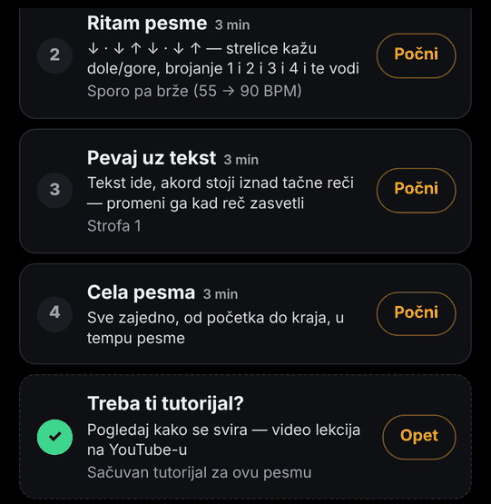
2.4.18 Pregledniji meniji pesme, tutorijal na dohvat rukeClearer song menus, the tutorial within reach 25. 11. 2026.
⋯ je sada za ono što radiš sa pesmom: Uredi (tekst i naslov ili akordi prstom), Video i tutorijal (promena linkova), Dijagrami akorda, Podeli (link ili PDF) i Nastavnik. ⚙ je samo kako pesma zvuči i izgleda — ton, kapodaster, tempo, metronom, ritam, lakša verzija, veličina teksta. Ništa se više ne nalazi na dva mesta.
⋯ is now for what you do with the song: Edit (text and title, or chords by touch), Video and tutorial (changing links), Chord diagrams, Share (link or PDF) and Teacher. ⚙ is only how the song sounds and looks — key, capo, tempo, metronome, rhythm, easier version, text size. Nothing is in two places anymore.
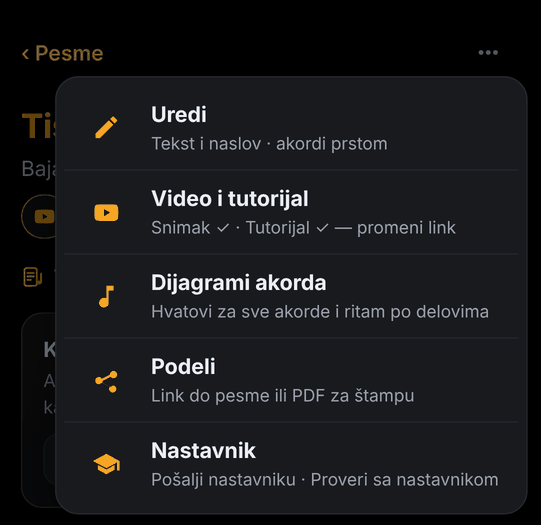
Čip videa nudi „Snimak — sviraj uz njega“ (pesma prati video) ili „Tutorijal — nauči pesmu“ (otvara se YouTube). U „Vežbaj pesmu“ je tutorijal prvi korak, „Pogledaj tutorijal“.
The video chip offers “Video — play along” (the song follows the video) or “Tutorial — learn the song” (opens YouTube). In Practise a song the tutorial is the first step, “Watch the tutorial”.
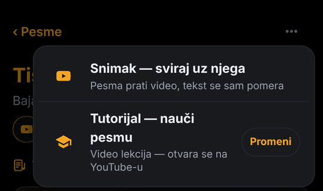
2.4.17 Vežbaj pesmu: više vežbi, redom — i Pevaj uz tekstPractise a song: several exercises in order — and Sing along 24. 11. 2026.
„Vežbaj“ na pesmi sada daje predlog za danas napravljen iz te pesme: promene akorda (sa najtežom promenom), ritam pesme (strelice ↓ dole, ↑ gore i brojanje 1 i 2 i 3 i 4 i), pevanje uz tekst i cela pesma. Svaka vežba kaže tačno šta radiš, a urađeno danas dobija ✓. Ispod je i dalje vežbanje po delovima — dodir na deo odmah počinje.
Practise on a song now gives today’s plan built from that song: chord changes (with the hardest change), the song’s rhythm (↓ down, ↑ up arrows and the count 1 and 2 and 3 and 4 and), sing along and the whole song. Each exercise says exactly what to do, and done today gets a ✓. Below, practising by parts is still there — tapping a part starts it right away.
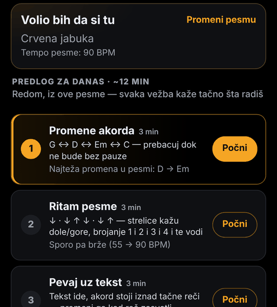
Pevaj uz tekst: tekst ide red po red, akord stoji tačno iznad reči na kojoj se menja (sledeći je uokviren), gore su strelice udaraca i brojanje, a veliki akord kaže i koji dolazi i za koliko udaraca. Aplikacija sluša — reč postane zelena kad je akord na vreme.
Sing along: the lyrics go line by line, each chord sits right above the word where it changes (the next one is framed), the strum arrows and count are at the top, and the big chord says what comes next and in how many strums. The app listens — the word turns green when the chord is on time.
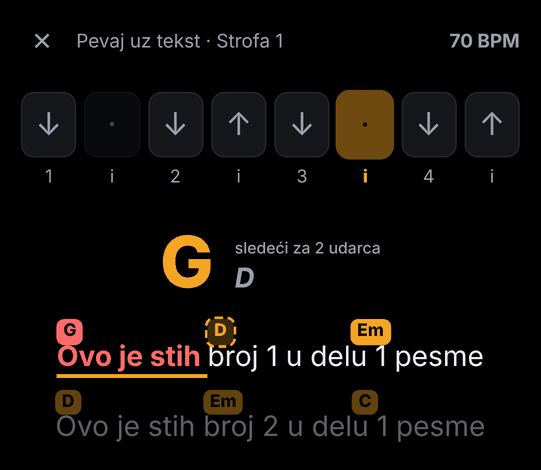
2.4.16 Pesme od nastavnika na svom mestu, uvid bez štopericeTeacher songs in place, insight without a stopwatch 24. 11. 2026.
Pesma koju ti nastavnik pošalje je odmah tvoja: u „Sve pesme“ i u grupi 🎓 Od nastavnika (čip sa imenom nastavnika, na računaru levo pod „Nastava“) — tu su sve pesme koje ti je ikad poslao. Nema biranja foldera; po želji je dodaš i u set listu.
A song your teacher sends is yours right away: in All songs and in the 🎓 From teacher group (a chip with your teacher’s name, on a computer on the left under Teaching) — every song they have ever sent you. No folder to pick; add it to a set list if you like.
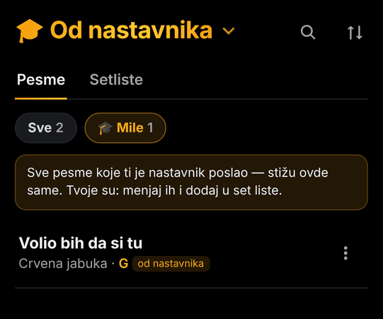
Štoperica je uklonjena. Aplikacija sama beleži koliko sviraš pesmu — i kad je samo otvorena dok sviraš (do 10 minuta bez dodira). Na pesmi ispod „Vežbaj“: danas, ukupno, koliko dana i koje delove si vežbao sa zvezdicama; „Detalji“ otvara sve.
The stopwatch is gone. The app records how long you play a song by itself — even when it is just open while you play (up to 10 minutes without touching). On the song under Practice: today, total, on how many days and which parts you practised, with stars; Details opens everything.
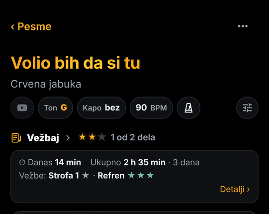
2.4.15 Čistiji talas u tuneruA cleaner tuner wave 24. 11. 2026.
Talas preko skale sada ostavlja kratak trag koji brzo nestane. Kad žica utihne, ekran ostaje potpuno crn — na AMOLED ekranima više nema blede „mrlje“ koja je ranije zaostajala.
The wave over the scale now leaves a short trail that fades quickly. When the string goes quiet the screen goes fully black — no more faint “smudge” left behind on AMOLED screens.
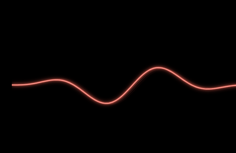
2.4.14 Slanje više pesama — pouzdano, uz „stiglo“ i linkSending several songs — reliably, with “arrived” and a link 24. 11. 2026.
Pesme koje šalješ učenicima (do 300 odjednom) sada idu pravo u učenikovo sanduče, u jednom fajlu — bez posebnog deljenog fajla i dozvola na Google Drive-u, pa je manje koraka koji mogu da zapnu. Učenik ih prima jednim čitanjem, sa oznakom „od nastavnika“.
Songs you send to students (up to 300 at once) now go straight into the student’s inbox, in one file — no separate shared file or Google Drive permissions, so fewer steps can get stuck. The student receives them in one read, marked “from teacher”.
U „Poslato“ vidiš ✓ stiglo (učenikova aplikacija ih je preuzela), ✓ viđeno ili ⚠ nije stiglo — uz ↻ Pošalji ponovo i 🔗 Pošalji kao link (Viber, WhatsApp, potpuno bez Google-a; do ~7 pesama u linku, više kao fajl).
In “Sent” you see ✓ arrived (the student’s app has fetched them), ✓ seen or ⚠ not arrived — with ↻ Send again and 🔗 Send as a link (Viber, WhatsApp, entirely without Google; about 7 songs per link, more as a file).
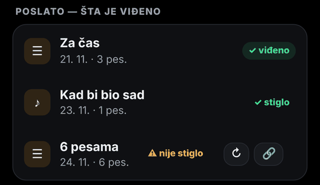
Učenik u „Od nastavnika“ vidi kada je poslednji put provereno i ima Proveri sada.
In “From teacher” the student sees when it was last checked and has Check now.
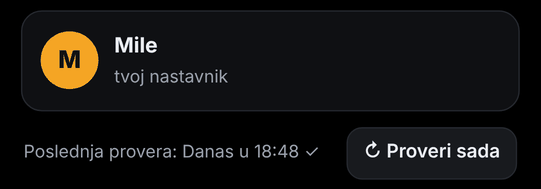
2.4.13 Akordi u jednom ritmu [ ]Chords in one rhythm [ ] 24. 11. 2026.
Nova oznaka [ ] oko akorda: sve što je u zagradi odsviraj u jednom ritmu (istom taktu) — npr. [D Em]. Vidi se u pesmi, u „Sviraj“, u PDF-u i kod učenika kad mu pošalješ pesmu.
A new [ ] mark around chords: play everything in the bracket within one rhythm (the same bar) — e.g. [D Em]. It shows in the song, in Play, in the PDF and on the student’s phone when you send the song.
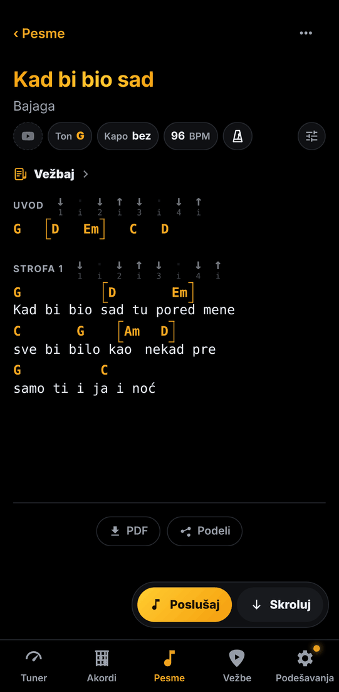
Kako se dodaje: u uređivanju akorda dodirni akord → „[ ] U jednom ritmu sa sledećim“ (ponovo dodirni da ukloniš; za tri akorda dodaj i na drugom). Na računaru: klik na akord → dugme [ ] ili taster B. U „Uredi pesmu“ se piše [D Em] u redu akorda.
How to add it: while editing chords tap a chord → “In one rhythm with the next” (tap again to remove; for three chords add it on the second one too). On a computer: click a chord → the [ ] button or the B key. In “Edit song” write [D Em] on the chord line.
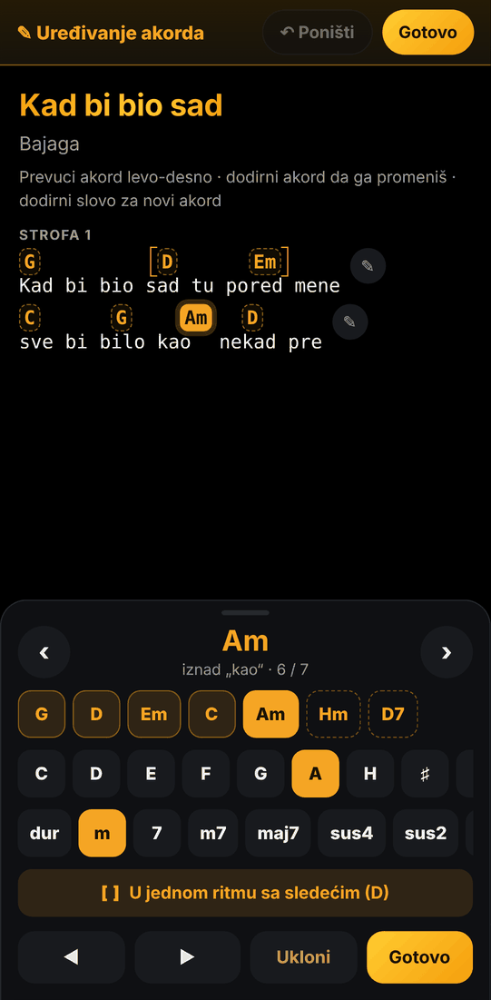
2.4.12 Slanje učenicima pouzdanijeMore reliable sending to students 24. 11. 2026.
Kad Google privremeno uspori, sanduče učenika se više ne briše (ranije je tada mogla da nestane i pesma koju učenik još nije preuzeo). Ono što pošalješ čeka i samo se pošalje čim Google dozvoli — na stranici učenika piše „Čeka slanje“, a u zvonce stiže „Poslato ono što je čekalo“. Ako slanje ne uspe, to sada piše.
When Google temporarily slows down, the student’s inbox is no longer wiped (before, a song the student hadn’t picked up yet could disappear). What you send waits and goes out by itself as soon as Google allows — the student’s page shows “Waiting to send”, and the bell says “Sent what was waiting”. If sending fails, it now says so.
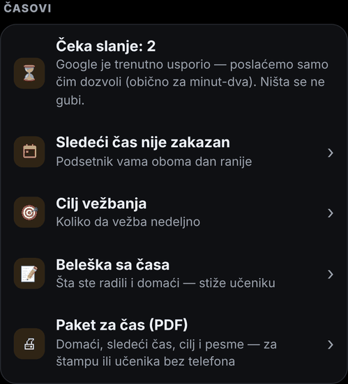
2.4.11 Popravke iz dijagnostike, mirnija sinhronizacijaFixes from diagnostics, calmer sync 24. 11. 2026.
Iz poslatih dijagnostika: deljenje set liste ili pesme više ne puca kad nekoj pesmi fali deo. Kad Google privremeno uspori MARLI, plan od nastavnika više ne nestaje, nastavnik ne vidi „ne deli napredak“ i link se ne proglašava nevažećim — to je samo „pokušaj malo kasnije“.
From the diagnostics you sent: sharing a set list or song no longer fails when a song is missing a part. When Google temporarily slows MARLI down, the teacher’s plan no longer disappears, the teacher doesn’t see “not sharing progress”, and a link isn’t called invalid — it is just “try a bit later”.
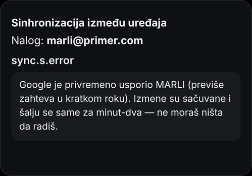
Kad Google kaže „uspori“, svi delovi aplikacije zajedno sačekaju (sinhronizacija, rezervna kopija, sanduče, napredak) — i posle ponovnog otvaranja — pa se ograničenje brže skida. Izmene su sačuvane i šalju se same.
When Google says “slow down”, every part of the app waits together (sync, backup, inbox, progress) — even after reopening — so the limit lifts sooner. Your changes are saved and go out on their own.
2.4.10 Niz sa štitom, spremne pesme, poređenje snimaka, paket za časStreak with a shield, ready songs, recording comparison, lesson pack 24. 11. 2026.
Dani zaredom su na Vežbama, na kartici „Ova nedelja“. Svakih 7 dana zaredom dobijaš 🛡 štit (najviše 2): ako propustiš dan, štit sam sačuva niz. Nastavnik vidi isti broj.
Your day streak is in Practice, on the “This week” card. Every 7 days in a row earns a 🛡 shield (2 at most): miss a day and a shield saves your streak. Your teacher sees the same number.
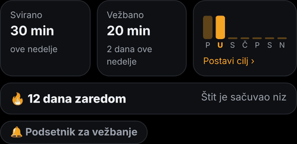
Spremne za svirku: pesma kojoj su svi delovi vežbani na 80 % i više ima oznaku „spremna“ i nalazi se u grupi „Spremne za svirku“. Uporedi snimke: na snimku iz „Samo sviraj“ uporedi ga sa ranijim — ujednačenost, tempo i promene akorda.
Ready to play: a song with every part practised at 80 % or more is marked “ready” and sits in the “Ready to play” group. Compare recordings: on a Just play recording, compare it with an earlier one — steadiness, tempo and chord changes.
Paket za čas (PDF) na stranici učenika: domaći, šta ste radili, sledeći čas, cilj i izabrane pesme — za štampu ili učenika bez telefona (na računaru taster P).
Lesson pack (PDF) on a student’s page: homework, what you covered, the next lesson, the goal and the chosen songs — to print or for a student without a phone (P on a computer).
2.4.9 Nastava: sve beleške, cilj vežbanja, više učenika, prečiceTeaching: all notes, practice goal, several students, shortcuts 24. 11. 2026.
Na stranici učenika: cilj vežbanja (koliko nedeljno — učeniku se pojavi na kartici „Ova nedelja“, a ti vidiš koliko je urađeno), sve beleške sa časova (uredi ili „Kopiraj domaći“), u novoj belešci „↺ prošli domaći“. Na računaru prečice: N beleška, L čas, G cilj, R podseti, H sve beleške, S pošalji, ← → drugi učenik.
On a student’s page: a practice goal (how much per week — it shows on the student’s “This week” card, and you see how much is done), all lesson notes (edit or “Copy homework”), and “↺ last homework” in a new note. On a computer, shortcuts: N note, L lesson, G goal, R remind, H all notes, S send, ← → other student.
Više učenika odjednom: izaberi učenike i pošalji istu belešku i domaći, cilj ili podsetnik — svako dobija svoju kopiju.
Several students at once: pick students and send the same note and homework, a goal or a reminder — each gets their own copy.
2.4.8 Sviraj sa akordima, tekst preko ekrana, metronomPlay with chords, text that fills the screen, metronome 24. 11. 2026.
U „Sviraj“ i nastupu tekst je uvek najveći koji staje u širinu ekrana (Aa ga i dalje menja). Na širokom ekranu desno stoje hvatovi svih akorda, a istaknut je akord reda koji upravo sviraš; „sakrij“ ih sklanja.
In Play and on stage the text is always as big as fits the screen width (Aa still changes it). On a wide screen the shapes of all the chords sit on the right, with the chord of the line you are playing highlighted; “hide” puts them away.
Metronom je na pesmi odmah u redu čipova — ikonica sa klatnom koje se njiše u tempu dok svira. U „Sviraj“ i nastupu ima svoje dugme (− / + na većem ekranu) i prati tempo svake pesme. Čip Ritam otvara malu traku: ▶ poslušaj, ime ritma, „Promeni…“.
The metronome is right in a song’s chip row — an icon with a pendulum that swings in time while it plays. In Play and on stage it has its own button (− / + on bigger screens) and follows each song’s tempo. The Rhythm chip opens a small strip: ▶ listen, the rhythm name, “Change…”.
2.4.7 Pesma na računaru: razdelnik, fokus, SvirajSongs on a computer: divider, focus, Play 24. 11. 2026.
Kad na računaru otvoriš pesmu, bočna traka se skloni, a lista se suzi na naslove. Razdelnik između liste i pesme prevuci levo ili desno — širina se pamti. Gore su ista dugmad kao na telefonu (Ton, Kapo, BPM, ritam), a tekst je u jednoj koloni.
When you open a song on a computer the sidebar moves away and the list narrows to titles. Drag the divider between the list and the song left or right — the width is remembered. At the top are the same chips as on a phone (Key, Capo, BPM, rhythm), and the lyrics are in one column.
Fokus (taster F, dugme „Fokus“ ili razdelnik do kraja levo): samo pesma preko celog ekrana; Esc vraća listu. PageDown ili Bluetooth pedala lista stranu i kratko obeleži red na kome si stao.
Focus (the F key, the “Focus” button or the divider all the way left): just the song, full width; Esc brings the list back. PageDown or a Bluetooth pedal turns the page and briefly marks the line where you were.
Sviraj (taster P): pesma preko celog ekrana, velikim slovima, ekran ne gasne — kao nastup, samo za jednu pesmu.
Play (the P key): the song full screen with big text, the screen stays on — like a gig, for one song.
2.4.6 Podešavanja pesme: pola ekrana, sklapanje, poništiSong settings: half height, folding, undo 24. 11. 2026.
List Podešavanja pesme se otvara do pola ekrana, pa pesmu vidiš dok menjaš ton, kapodaster ili tempo. Uhvati ručicu — list prati prst gore-dole, a kad pustiš stane na pola, na ceo ekran ili se zatvori.
The Song settings sheet opens at half height, so you see the song while you change the key, capo or tempo. Grab the handle — the sheet follows your finger up and down, and when you let go it settles at half, full height or closes.
Ređe stvari su sklopljene ispod „Samo u ⚙“ (dodir ih otvara, pamti se). Posle „Primeni“ predloženog ritma ili vraćanja originalnog tona pojavi se „Poništi“, a kad ponovo otvoriš list, vidiš red koji si poslednji menjao.
Less-used items are folded under “Only in ⚙” (a tap opens them, and it is remembered). After applying a suggested rhythm or going back to the original key you get “Undo”, and when you reopen the sheet the row you last changed is in view.
2.4.5 Podešavanja pesme, ekran ne gasne, set liste od nastavnikaSong settings, screen stays on, set lists from your teacher 24. 11. 2026.
Podešavanja pesme (⚙ na telefonu): dugme ✕ je uvek na vrhu, list se zatvara i prevlačenjem nadole ili dodirom van njega, a pesma ispod se više ne pomera dok je otvoren. Predlog ritma je sada u drugom redu i ne preklapa natpis.
Song settings (⚙ on a phone): the ✕ button is always at the top, the sheet also closes when you swipe it down or tap outside, and the song underneath no longer scrolls while it is open. The suggested rhythm is now on its own line and no longer overlaps the label.
Ekran ne gasne dok je pesma otvorena, i kad je samo čitaš (podešavanje „Dok koristim pesme“). Set lista i rečnik akorda i dalje čekaju izabrani broj minuta posle poslednjeg dodira.
The screen stays on while a song is open, even when you only read it (the “While I use songs” setting). The set list and chord book still wait the chosen number of minutes after your last touch.
Set liste od nastavnika imaju oznaku „od nastavnika“ u spisku set lista, a na računaru 🎓 u bočnoj traci.
Set lists from your teacher are marked “from teacher” in the set list list, and with 🎓 in the sidebar on a computer.
2.4.4 Metronom i štoperica, uređaji, jasnija sinhronizacijaMetronome and timer, devices, clearer sync 24. 11. 2026.
Metronom i štoperica na pesmi: dodaj ih u ⚙ na vrh pesme. Metronom klika po tempu pesme, štoperica meri vežbanje te pesme (i računa se u nedeljno vreme). Na računaru su u traci pesme.
Metronome and timer on a song: add them to the top via ⚙. The metronome clicks at the song’s tempo, the timer measures practice on that song (and counts towards your weekly time). On a computer they are in the song toolbar.
Sinhronizacija: u Podešavanjima je spisak uređaja na tvom nalogu i kad je koji poslednji put sinhronizovan, a kad nešto ne ide, objašnjenje je običnim rečima — šta se dešava, da se ništa ne gubi i šta da uradiš.
Sync: Settings now lists the devices on your account and when each one last synced, and when something goes wrong the explanation is in plain words — what is happening, that nothing is lost and what to do.
2.4.3 Komentar na snimak, podsetnik, pregled vežbanjaRecording comments, reminder, practice summary 24. 11. 2026.
Komentar na snimak: nastavnik na snimku koji je učenik poslao ostavi tekst i/ili glasovnu poruku. Učenik ga vidi baš na tom snimku, pusti glas i odgovori jednim dodirom.
Recording comments: on a recording the student sent, the teacher leaves text and/or a voice message. The student sees it right on that recording, plays the voice and replies with one tap.
Pregled posle vežbanja: posle bar 5 minuta — koliko danas, rezultati igara i pesme, i „Pošalji nastavniku“.
Summary after practice: after at least 5 minutes — today’s time, game scores and songs, plus “Send to my teacher”.
Podsetnik za vežbanje na Vežbama: svaki dan u izabrano vreme, samo ako danas još nisi vežbao. Instalirana aplikacija na Androidu podseća i kad je zatvorena.
A practice reminder in Practice: every day at the time you pick, only if you haven’t practised yet today. The installed app on Android reminds you even when it is closed.
2.4.2 Časovi: beleška, sledeći čas, brz odgovorLessons: note, next lesson, quick reply 24. 11. 2026.
Nastavnik: na stranici učenika je novi odeljak Časovi — zakaži sledeći čas i zapiši šta ste radili i domaći. Ispod se vidi sve poslato i da li je učenik to video i šta je odgovorio.
Teacher: the student’s page has a new Lessons section — schedule the next lesson and write what you covered and the homework. Below you see everything you sent and whether the student has seen it and how they replied.
Učenik: u „Od nastavnika“ i na Vežbama vidi sledeći čas i domaći, i odgovori jednim dodirom: Važi, Vežbaću ili Ne razumem. Oboje dobijate podsetnik dan pred čas.
Student: “From teacher” and Practice show the next lesson and the homework, with a one-tap reply: OK, Will practise or Don’t understand. You both get a reminder the day before the lesson.
Ko ne vežba: na Učenicima se vide oni koji nisu vežbali nedelju dana; „Podseti“ im šalje podsetnik u zvonce.
Who isn’t practising: Students shows who hasn’t practised for a week; “Remind” sends them a reminder in the bell.
2.4.1 Tačniji tunerA more accurate tuner 24. 11. 2026.
Žica se označava tek kad je zaista naštimovana (±3 centa) i kad se ton smiri — ranije je ponekad označio i žicu koja je bila 6–8 centi nisko. Posle svake žice tuner pokazuje sledeću i ističe je na glavi gitare; poslednje očitavanje ostaje još 2 sekunde kad žica utihne.
A string is marked only once it is really in tune (±3 cents) and the note has settled — before, it sometimes marked a string 6–8 cents flat. After each string the tuner shows the next one and highlights it on the headstock; the last reading stays for 2 seconds after the string goes quiet.
U podešavanjima tunera je nova Preciznost (Normalno ±3 / Precizno ±1,5 cent). Dug pritisak na ključ pušta referentni ton koji zvoni dok ne dodirneš ekran, mikrofon se sam vraća kad se vratiš u aplikaciju, a tuner troši oko upola manje baterije.
Tuner settings have a new Precision (Normal ±3 / Precise ±1.5 cents). A long press on a peg plays a reference tone that rings until you tap the screen, the mic comes back by itself when you return to the app, and the tuner uses about half the battery.
2.4 Tapni tempo, Prvi koraci, savetiTap tempo, First steps, tips 23. 11. 2026.
Tapni tempo: na pesmi dodirni čip BPM, pa „Tapni“ u ritmu pesme (bar 3 puta) — MARLI izračuna tempo i sačuva ga.
Tap tempo: on a song tap the BPM chip, then “Tap” along with the song (at least 3 times) — MARLI works out the tempo and saves it.
Prvi koraci na Vežbama vode novog korisnika kroz četiri stvari (tuner, svoja pesma, igra, Google nalog) i štikliraju se sami.
First steps in Practice walk a newcomer through four things (tuner, own song, a game, Google account) and tick themselves off.
Saveti: pri prvoj poseti ekranu kratko objašnjenje šta je tu najkorisnije — jednom, i nikad preko obilaska. Uz to: na položenom telefonu − 🔍 + je u donjoj traci, sporiji telefoni pokazuju obrise ekrana dok se puni, a dodir na tonalitet u krugu tonaliteta ga sada bira.
Tips: on the first visit to a screen, a short note on what is most useful there — once, and never over the tour. Also: in landscape − 🔍 + sits in the bottom bar, slower phones show an outline while a screen loads, and tapping a key on the key wheel now picks it.
2.3.3 Brže i glatkijeFaster and smoother 12. 11. 2026.
Pregledali smo celu aplikaciju na telefonu (uspravno i položeno), tabletu i računaru — sa procesorom usporenim kao na starom telefonu. Pomeranje teksta pesme i liste pesama ostaje glatko (60 sličica u sekundi), a pokretanje je lakše.
We went through the whole app on phone (portrait and landscape), tablet and computer — with the processor slowed down like an old phone. Scrolling songs and the song list stays smooth (60 frames per second) and start-up is lighter.
Ekrani više ne skaču: Vežbe, ekran igre (dugme Počni) i Podešavanja ostaju na mestu dok stižu kartice i podaci, pa ne promašiš ono što si hteo da dodirneš. Manje memorije: Podešavanja i biblioteka na računaru više ne ostavljaju staru kopiju ekrana posle svake posete.
Screens no longer jump: Practice, the game screen (the Start button) and Settings stay put while cards and data arrive, so you don't miss what you meant to tap. Less memory: Settings and the desktop library no longer leave an old copy of the screen behind after every visit.
Pretraga ostaje glatka i kad imaš stotine pesama. Na računaru, kad otvoriš pesmu, sadržaj meko klizne dok se bočna traka skuplja.
Search stays smooth even with hundreds of songs. On a computer, opening a song makes the content glide while the sidebar shrinks.
2.3.2 Novi obilasciNew tours 12. 11. 2026.
Prvi put: kratak obilazak koji pokazuje prava dugmad na ekranu — koliko sviraš, mikrofon, tuner, Samo sviraj, skeniranje, kako pesma postaje igra, „odsviraj E“, nastavnik, Gemini ključ, Google Drive. Na računaru je drugačiji: biblioteka i priprema pesama prvo.
First time: a short tour pointing at the real buttons — how much you play, microphone, tuner, Just play, scanning, how a song becomes a game, “play E”, teacher, Gemini key, Google Drive. Different on a computer: library and preparing songs first.
Podešavanja → O aplikaciji: „Sve što MARLI ume“ (sve mogućnosti, redom od najzanimljivijeg), kratki uvod i Obilazak za nastavnike — na primer-podacima, pa ga možeš pokazati bilo kome.
Settings → About: “Everything MARLI can do” (every feature, most interesting first), the short intro and the Tour for teachers — on example data, so you can show it to anyone.
2.3.1 „Aa“ bez procenta“Aa” without the percent 12. 11. 2026.
Čip za veličinu teksta na pesmi sada piše samo „Aa“. Procenat (npr. 120%) se vidi samo dok menjaš veličinu i nestaje 2 s posle poslednjeg dodira, zajedno sa trakom −/+.
The text-size chip on a song now just says “Aa”. The percent (e.g. 120%) shows only while you change the size and disappears 2 s after your last tap, together with the −/+ bar.
2.3 Čipovi na pesmi rade odmahSong chips work right there 12. 11. 2026.
Dodir na Aa, Kapo ili BPM otvara malu traku − vrednost + odmah ispod čipa — tekst se menja dok tapkaš, a traka se sama skloni 2 s posle poslednjeg dodira (ili dodirom bilo gde drugo). Ton odmah otvara krug tonaliteta, Ritam izbor ritma. ⚙ i dalje otvara sva podešavanja pesme.
Tapping Aa, Capo or BPM opens a small − value + bar right under the chip — the text changes as you tap, and the bar hides 2 s after your last tap (or when you tap elsewhere). Key opens the key wheel straight away, Rhythm the rhythm picker. ⚙ still opens all song settings.
2.2 Ti biraš šta je na vrhu pesmeYou choose what is on top of the song 12. 11. 2026.
U ⚙ Podešavanja pesme svaki red ima ≡ — prevuci ga u „Na vrhu pesme“ (redom kao gore) ili u „Samo u ⚙“. Gore mogu i Lakša verzija, Veličina teksta, Akordi i Vežbaj; vidi se prvih koliko stane u jedan red. Isto prevlačenje sada radi u svim listama: set liste, redosled akorda u Promeni akorda i u Ritmu i promenama.
In ⚙ Song settings every row has ≡ — drag it into “On top of the song” (in the order shown on top) or into “Only in ⚙”. Easier version, Text size, Chords and Practise can go on top too; as many as fit on one line are shown. The same dragging now works in every list: set lists and chord order in Chord switch and Rhythm & changes.
Takođe: „Vežbaj ›“ sa strelicom uz reč, mirnija sinhronizacija (ređe provere, izmene zajedno, čeka kad Google kaže „uspori“) i na engleskom kartica Nastava se zove „Lessons“.
Also: “Practise ›” with the arrow next to the word, calmer sync (fewer checks, changes sent together, waits when Google says “slow down”), and the Teaching tab is now called “Lessons”.
2.1.1 Veći tekst pesmeBigger song text 11. 11. 2026.
Kad je telefon položen i na tabletu nema više kolone sa hvatovima desno — tekst pesme dobija celu širinu i veća slova. Hvat i dalje vidiš dodirom na akord u tekstu. Na računaru kolona ostaje.
In landscape on a phone and on tablets the chord-shape column on the right is gone — the lyrics get the full width and bigger letters. Tap a chord in the lyrics to see its shape. On a computer the column stays.
2.1 Ritam i promeneRhythm & changes 11. 11. 2026.
Nova vežba u Vežbama (Nastavi): drži zadati ritam i menjaj akorde na vreme, korak po korak — svaki akord sam, pa promene na 4 takta, na 2, i ceo niz na ciljnom tempu. Sledeći korak se otvara posle čistih rundi. Posle svake runde dve ocene — promene i ritam — i gde ritam beži.
A new exercise in Practice: keep the given rhythm and change chords on time, step by step — each chord alone, then changes every 4 bars, every 2, and the whole sequence at the target tempo. The next step opens after clean rounds. After each round two scores — changes and rhythm — and where the rhythm slips.
Na pesmi (telefon) je red Uz video · Ton · Kapo · BPM · ⚙ uvek u jednom redu, bez odsečenih dugmića — kad nema mesta, ritam se menja u ⚙, a na uskom telefonu „Uz video“ je samo ikonica.
On the song screen (phone) the Play along · Key · Capo · BPM · ⚙ row always fits on one line with nothing cut off — when space is short the rhythm moves into ⚙, and on a narrow phone “Play along” is just the icon.
Nastavnik zadaje vežbu (akordi po imenu, hvat po želji, ritam, rundi po koraku, cilj tempo) i vidi napredak. Napravi mi daje lestvicu od 4 vežbe, a Iz pesme pravi korake do tvoje pesme — na kraju je sviraš uz video.
The teacher assigns it (chords by name, shape if wanted, rhythm, rounds per step, goal tempo) and sees progress. Make me some gives a ladder of 4 exercises, and From a song builds steps toward your song — ending with playing it along with the video.
2.0.1 „Uz video“ se opet vidi“Play along” is visible again 11. 11. 2026.
Na telefonu je dugme „Uz video“ bilo skriveno u podešavanjima pesme. Sada je prvo u redu sa Ton · Kapo · BPM: jedan dodir pušta pesmu uz YouTube snimak. Ako pesma još nema video, piše „Poveži video“ — dodir otvara izbor snimka. Na računaru je i dalje u traci iznad pesme.
On the phone the “Play along” button was hidden in the song settings. It is now first in the row with Key · Capo · BPM: one tap plays along with the YouTube clip. If the song has no video yet, it says “Link video” — tap to choose a clip. On a computer it is still in the toolbar above the song.
2.0 Nastava i lakše snalaženjeTeaching and easier navigation 11. 11. 2026.
Kad si povezan sa nastavnikom, kartica Vežbe postaje Nastava (kapa u donjoj traci, na računaru u bočnoj). Na vrhu je uvek tvoja nedelja (svirano, vežbano, cilj), odmah ispod nastavnik: nove pesme od njega (označene NOVO), Pitaj nastavnika i Pošalji snimak; „Sve ›“ otvara sve što ti je poslao. Ispod su zadaci, Danas i sve igre — kao do sada.
When you are connected with a teacher, the Practice tab becomes Teaching (a cap in the bottom bar, in the side bar on a computer). Your week (played, practiced, goal) is always on top, right below it your teacher: new songs from them (marked NEW), Ask your teacher and Send a recording; “All ›” opens everything they sent. Below are tasks, Today and all games — as before.
Nastavnik u Nastavi odmah vidi svoje učenike — narandžasti broj su novi zahtevi i snimci — sa „Nov učenik“ i „Pošalji pesme“, a ispod svoje vežbe.
A teacher sees their students in Teaching right away — the orange number is new requests and recordings — with “New student” and “Send songs”, and their own practice below.
U Vežbama je kartica „Imaš nastavnika?“: skeniraj nastavnikov QR (gde telefon to ume) ili nalepi link koji ti je poslao. Tako radi i u aplikaciji sa početnog ekrana na iPhone-u, koja ne vidi ono što je prihvaćeno u Safariju. Ne treba ti? „Ne, hvala“ — i dalje je u Podešavanja → Nastava.
Practice has a “Have a teacher?” card: scan your teacher’s QR (where the phone supports it) or paste the link they sent you. This also works in the iPhone home-screen app, which does not see what was accepted in Safari. Don’t need it? “No, thanks” — it stays in Settings → Teaching.
Kad je telefon položen u Samo sviraj, preko vrata dole desno je ista ruka kao u igrama, providna: boja i broj svakog prsta, 0 = prazna žica, × = ne sviraj. ▾ je skuplja u malu ruku — to se pamti. Hvatovi (Rečnik, pesma, Prepoznavanje) su sada svuda u bojama prstiju.
With the phone sideways in Just play, the same hand as in the games sits over the neck at the bottom right, see-through: color and number of each finger, 0 = open string, × = do not play. ▾ shrinks it to a small hand — remembered. Chord shapes (Dictionary, song, Recognize) are now in finger colors everywhere.
Ispod naslova Pesama su grupe kao dugmići — Sve, Od nastavnika, Moji snimci, tvoji folderi, TAB — jedan dodir umesto skrivenog „Sve pesme ▾“. Lupa sada nalazi i set liste, vežbe, igre, delove aplikacije i podešavanja. Svi snimci su u Pesme → Moji snimci (Akordi → Samo sviraj pokazuje poslednja 3). MARLI se otvara gde si stao; ako si bio na Tuneru, otvara Tuner kao do sada.
Under the Songs title the groups are chips — All, From teacher, My recordings, your folders, TAB — one tap instead of the hidden “All songs ▾”. The magnifier now also finds set lists, exercises, games, app sections and settings. All recordings are in Songs → My recordings (Chords → Just play shows the last 3). MARLI opens where you left off; if you were on the Tuner, it opens the Tuner as before.
1.99.6 Računar: Vežbe i PodešavanjaComputer: Practice and Settings 11. 11. 2026.
Na računaru je „Danas“ u Vežbama sada uska traka — igra dana i „Kreni“ — a pored nje su, u jednom redu, svirano, vežbano i cilj za ovu nedelju. Tako se sve igre vide bez skrolovanja. Vežbe i Podešavanja imaju beli naslov sa kratkim opisom, kao Tuner i Akordi; zvonce je i dalje gore, pored naloga. Telefon i tablet su isti.
On a computer “Today” in Practice is now a slim strip — game of the day and “Go” — with played, practiced and goal for this week next to it in one row, so all games fit without scrolling. Practice and Settings have a white title with a short description, like Tuner and Chords; the bell stays at the top next to the account. Phone and tablet are unchanged.
1.99.5 Računar: Akordi u karticamaComputer: Chords as cards 11. 11. 2026.
Na računaru Akordi više nisu traka razvučena preko ekrana: gore su četiri kartice — Prepoznavanje, Samo sviraj, Rečnik i Ritam — svaka sa ikonicom i jednim redom šta radi. Ispod, svaki deo koristi celu širinu: u Prepoznavanju je rezultat velik levo, a dugme „Slušaj“ desno; u Samo sviraj su dugme i Moji snimci jedno pored drugog; u Rečniku su tonovi i vrste akorda levo, a hvat sa „Odsviraj“ desno — bez skrolovanja. Sve radi isto kao do sada; telefon i tablet su isti.
On a computer Chords is no longer a strip stretched across the screen: at the top there are four cards — Recognize, Just play, Dictionary and Rhythm — each with an icon and one line about what it does. Below, each part uses the full width: in Recognize the result is big on the left and “Listen” on the right; in Just play the button and My recordings sit side by side; in Dictionary the notes and chord types are on the left and the shape with “Play” on the right — no scrolling. Everything works as before; phone and tablet are unchanged.
1.99.4 Računar: novi izgled TuneraComputer: new Tuner look 11. 11. 2026.
Na računaru je Tuner sada u dve kartice: levo veliki merač i nota, desno cela glava gitare sa ključevima koji svetle (narandžasto žica koju štimuješ, zeleno naštimovane). Dugme „Pokreni tuner“ je samo preko merača, a gitara ostaje svetla. Gore desno su štimovanje i A4 — dodir otvara podešavanja. Tuner sluša i prepoznaje tačno kao do sada; telefon i tablet su isti.
On a computer the Tuner is now in two cards: on the left a big meter and note, on the right the whole guitar headstock with pegs that light up (orange for the string you are tuning, green when in tune). The “Start tuner” button covers only the meter, and the guitar stays bright. At the top right are tuning and A4 — tap to open settings. The tuner listens and detects exactly as before; phone and tablet are unchanged.
1.99.3 Računar: jedno zvonceComputer: one bell 11. 11. 2026.
Kad se MARLI na računaru sporije pokrene, zvonce je moglo da ostane i u bočnoj traci (ispod Podešavanja), pored onog gore. Sada je uvek samo jedno zvonce, gore pored naloga. U bočnom delu Pesama „Od nastavnika“ i „Učenici“ dobili su ikonice.
When MARLI started slowly on a computer, a bell could also stay in the side bar (under Settings), next to the one at the top. Now there is always just one bell, at the top next to the account. In the Songs side panel “From teacher” and “Students” got icons.
1.99.2 Deli napredak ne odustajeShare progress doesn’t give up 11. 11. 2026.
Kad učenik uključi Deli napredak, a Google na trenutak ograniči pristup (to se ponekad desi), deljenje sada ostaje uključeno umesto da se isključi sa greškom. MARLI sam pokuša ponovo posle 3, 10 i 30 minuta (i pri sledećem otvaranju), a kad uspe, zvonce javi „Napredak je spreman — pokaži QR“.
When a student turns on Share progress and Google briefly limits access (it happens sometimes), sharing now stays on instead of switching off with an error. MARLI tries again by itself after 3, 10 and 30 minutes (and the next time it opens), and when it works the bell says “Progress is ready — show the QR”.
Dijagnostika kod grešaka Google Drive-a (napredak i sinhronizacija) sada beleži i tačan Google razlog.
For Google Drive errors (progress and sync) diagnostics now also record Google’s exact reason.
1.99.1 Ispravka: pretragaFix: search 11. 11. 2026.
Ako je pretraga (Ctrl K) bila otvorena, a ti pređeš na drugi ekran (npr. klikom u bočnoj traci), prozor pretrage je ostajao preko stranice. Sada se sam zatvori.
If search (Ctrl K) was open and you went to another screen (e.g. by clicking in the side bar), the search window stayed on top of the page. Now it closes by itself.
Na telefonu nastavnika zvonce se sada vidi i na ekranu Učenici. Na računaru tabela učenika staje uz bočnu traku (kolona Zahtevi više nije odsečena), a ispod imena piše da li je učenik povezan.
On the teacher’s phone the bell now also shows on the Students screen. On the computer the student table fits next to the side bar (the Requests column is no longer cut off), and under each name it says whether the student is connected.
1.99 Računar: pretraga svega i tuner sa straneComputer: search everything and tuner at the side 11. 11. 2026.
Gore u traci je „Pretraži sve…“ (ili pritisni Ctrl K). Jedna pretraga nalazi pesme (po naslovu, izvođaču i po tekstu), set liste, Moje vežbe, igre, delove aplikacije, podešavanja i učenike. ↑ ↓ biraju, Enter otvara, Esc zatvara.
In the top bar there is “Search everything…” (or press Ctrl K). One search finds songs (by title, artist and lyrics), set lists, My exercises, games, app sections, settings and students. ↑ ↓ choose, Enter opens, Esc closes.
Dugme klizača na tuneru otvara podešavanja (štimovanje, soba, A4) kao panel desno, bez zatamnjenja — tuner radi dok menjaš. Sam tuner je isti.
The sliders button on the tuner opens its settings (tuning, room, A4) as a panel on the right, without dimming — the tuner keeps working while you change things. The tuner itself is unchanged.
Igre su sada 4 u redu, pa se sve vide bez skrolovanja.
Games are now 4 per row, so all of them are visible without scrolling.
1.98.1 Ispravka: donje trake na računaruFix: bottom bars on the computer 11. 11. 2026.
Traka sa dugmetom „Počni“ u vežbama, traka „Osveži“ i poziv za instalaciju sada počinju desno od bočne trake, pa se opis vežbe (npr. „Em ↔ G · ½ takta · Samo na 1 …“) više ne seče.
The “Start” bar in practice, the “Refresh” bar and the install prompt now start to the right of the side bar, so the exercise summary (e.g. “Em ↔ G · ½ bar · Only on 1 …”) is no longer cut off.
1.98 Računar: bočna traka i dugme nazadComputer: side bar and back button 11. 11. 2026.
Delovi aplikacije (Učenici, Tuner, Akordi, Pesme, Vežbe, Podešavanja) su sada u bočnoj traci levo — uvek jednim klikom, sa bilo kog mesta. Gore je traka sa ‹ › nazad / napred i putanjom (npr. Pesme › Subota u klubu › Lane moje); klik na deo putanje vodi tamo. Na ekranu pesme bočna traka se skupi u ikone, da tekst ima više mesta. Zvonce i nalog su gore desno.
The app sections (Students, Tuner, Chords, Songs, Practice, Settings) are now in a side bar on the left — always one click away, from anywhere. At the top is a bar with ‹ › back / forward and the path (e.g. Songs › Saturday gig › Lane moje); click part of the path to go there. On a song the side bar shrinks to icons so the lyrics get more room. The bell and your account are at the top right.
Instalirana aplikacija na Windows-u nema dugme nazad pregledača — zato je ‹ uvek vidljivo. Uz to: Esc ili Backspace vraća korak nazad sa pesme ili set liste (kad nije otvoren prozorčić i ne kucaš), Alt + ← / → i bočni tasteri miša rade nazad / napred, a naslov prozora pokazuje gde si (vidi se i na traci zadataka).
The installed app on Windows has no browser back button — so ‹ is always visible. Also: Esc or Backspace goes one step back from a song or set list (when no dialog is open and you are not typing), Alt + ← / → and the mouse side buttons go back / forward, and the window title shows where you are (also on the taskbar).
Na ekranu pesme na tabletu vraćena je lupa − 🔍 + pored teksta — veličina teksta jednim dodirom. Štipanje i dalje radi.
On the tablet song screen the − 🔍 + magnifier is back next to the lyrics — text size in one tap. Pinching still works.
1.97 Moja vežba: ritam i sačuvane vežbeMy exercise: rhythm and saved exercises 11. 11. 2026.
U Promeni akorda izaberi Ritam: „Samo na 1“ (udari na promenu, kao do sada) ili obrazac udaranja — folk, pop, rok, balada, rege, kantri… Uključi „Ritam po akordu“ i svaki akord dobija svoj obrazac (npr. Em samo četvrtine nadole). MARLI proverava akord na prvom udarcu, a ostale udarce na vreme.
In Chord changes pick a Rhythm: “Only on 1” (strum on the change, as before) or a strumming pattern — folk, pop, rock, ballad, reggae, country… Turn on “Rhythm per chord” and each chord gets its own pattern (e.g. Em only quarter downstrokes). MARLI checks the chord on the first strum and the other strums for timing.
„Sačuvaj kao vežbu“ pamti niz, trajanja i ritam pod imenom — vežba je na vrhu Vežbi i na svim tvojim uređajima (sinhronizacija). „Iz pesme…“: izaberi pesmu i deo (strofu, refren) — akordi tog dela postaju niz.
“Save as exercise” keeps the sequence, lengths and rhythm under a name — the exercise is at the top of Practice and on all your devices (sync). “From a song…”: pick a song and a part (verse, chorus) — its chords become the sequence.
„Pošalji učeniku“ (u Promeni akorda ili ⋯ kod vežbe): izaberi učenike i cilj (1, 3 ili 5 čistih rundi na izabranom tempu). Učenik je dobije sam u Moje vežbe, uz 🔔, bez poruka. Može da uspori dok vežba; ako je izmeni, čuva se kao „moja kopija“, a tvoja ostaje ista.
“Send to a student” (in Chord changes or ⋯ on an exercise): pick students and a goal (1, 3 or 5 clean rounds at the chosen tempo). The student gets it automatically in My exercises, with a 🔔, no messages. They can slow down while practising; if they change it, it is saved as “my copy” and yours stays the same.
1.96 Promena akorda: bilo koji akordiChord changes: any chords 11. 11. 2026.
Više nije samo par akorda: pravi niz od koliko god akorda, redom. Dodirni akord da ga promeniš, ukloniš ili mu promeniš trajanje (½, 1 ili 2 takta). „+ akord“: kucaj bilo koji akord — predlozi se pojavljuju dok kucaš — ili izaberi iz tona (u G: G Am Hm C D Em) ili iz svojih pesama. Gotovi nizovi su tu: parovi za početnike, G–D–Em–C, Am–F–C–G, C–Am–F–G, D–A–Hm–G i bluz u A (12 taktova).
It is no longer just a pair: build a sequence of as many chords as you like, in order. Tap a chord to change it, remove it or change its length (½, 1 or 2 bars). “+ chord”: type any chord — suggestions appear as you type — or pick from the key (in G: G Am Bm C D Em) or from your songs. Ready-made sequences: beginner pairs, G–D–Em–C, Am–F–C–G, C–Am–F–G, D–A–Bm–G and a 12-bar blues in A.
Najteža promena je označena, uz savet (koji prst ostaje na mestu, kako postaviti barre). Posle runde vidiš koja promena ti je bila najsporija, i jednim dodirom vežbaš samo nju.
The hardest change is marked, with a tip (which finger stays put, how to place a barre). After a round you see which change was slowest for you, and practise only that one with a single tap.
U „Predloži vežbu“ za Promenu akorda izaberi gotov niz ili upiši svoj („G Hm Em7 C“), sa ciljem. Učenik ga dobije sam (bez poruka) i u Vežbama mu se otvara baš taj niz.
In “Suggest practice” for Chord changes pick a ready-made sequence or type your own (“G Bm Em7 C”), with a goal. The student gets it automatically (no messages) and it opens exactly that sequence in Practice.
1.95 Obaveštenja 🔔Notifications 🔔 10. 11. 2026.
Kad si nastavnik ili si povezan sa nastavnikom, gore desno je zvonce sa brojem novih stvari (na telefonu na Pesmama, Vežbama, Učenicima i Od nastavnika; na računaru pored naloga). Učenik vidi pesme, set liste, plan i odgovore od nastavnika; nastavnik vidi želje, snimke, „Proveri pesmu“, urađene zadatke i ko se povezao. Dodir na stavku otvara tačno to mesto; „Označi sve kao pročitano“ briše broj.
When you are a teacher or connected to one, there is a bell at the top right with the number of new things (on phones on Songs, Practice, Students and From teacher; on a computer next to your account). Students see songs, set lists, plans and answers from the teacher; teachers see wishes, recordings, “Check song”, finished tasks and who connected. Tapping an item opens exactly that place; “Mark all as read” clears the number.
U Obaveštenjima dodirni „Uključi“ da stižu i kao obaveštenje telefona — dok je MARLI otvoren ili u pozadini. MARLI nema svoj server (sve je na tvom Google Drive-u), pa kad je aplikacija potpuno zatvorena, sve sačeka u zvoncu do sledećeg otvaranja.
In Notifications tap “Turn on” to also get phone notifications — while MARLI is open or in the background. MARLI has no server of its own (everything is in your Google Drive), so when the app is fully closed, everything waits in the bell until you open it.
1.94.1 Akord posle kraja redaChord after the end of a line 10. 11. 2026.
Neki akordi se sviraju posle poslednje reči u redu (na kraju takta). U „Uredi akorde“ (⋯ → Uredi akorde, ili dug pritisak na akord) sada: dodirni desno od kraja reda → „+ Dodaj akord“, ili prevuci akord preko kraja reda — lupa pokazuje gde staje. I ▶ pomera akord dalje od kraja.
Some chords are played after the last word of a line (at the end of a bar). In “Edit chords” (⋯ → Edit chords, or long-press a chord) you can now tap to the right of the line’s end → “+ Add chord”, or drag a chord past the end — the magnifier shows where it lands. ▶ also moves a chord past the end.
1.94 Nastava bez porukaTeaching without messages 10. 11. 2026.
Nastavnik pokaže QR za povezivanje, učenik ga skenira i dodirne „Prihvati i poveži Google“ („Deli napredak“ je uključeno). Zatim učenik pokaže svoj QR nastavniku — i to je sve. Za časove preko interneta: „Nismo zajedno? Kopiraj link“.
The teacher shows the QR to connect, the student scans it and taps “Accept and connect Google” (“Share progress” is on). Then the student shows their own QR to the teacher — that’s it. For online lessons: “Not together? Copy link”.
Pesme, set liste, odgovori i plan od nastavnika stižu pravo u „Od nastavnika“ (gore, „Novo od…“). „Sačuvaj u…“ stavlja pesmu u bilo koji folder ili set listu. Želje, „Imaš li ovu pesmu?“, „Proveri sa nastavnikom“ i snimci stižu nastavniku sami — nema više imejla ni Vibera.
Songs, set lists, answers and the plan from the teacher go straight into “From teacher” (top, “New from…”). “Save to…” puts a song in any folder or set list. Wishes, “Do you have this song?”, “Check with teacher” and recordings reach the teacher by themselves — no more email or Viber.
Potreban je Google nalog (tu se čuva mali fajl sa brojevima, samo za nastavnika). Za decu Google traži da roditelj odobri — MARLI kaže tačno šta treba uraditi, pa „Pokušaj ponovo“. Ko je napredak slao porukom, vidi karticu „Poveži Google“. Učenici povezani pre 1.94 treba jednom da skeniraju novi QR.
A Google account is needed (it keeps a small file with numbers, only for the teacher). For kids Google asks a parent to approve — MARLI says exactly what to do, then “Try again”. Anyone who sent progress by message sees a “Connect Google” card. Students connected before 1.94 need to scan the new QR once.
1.93 Pouzdanije čuvanjeMore reliable saving 10. 11. 2026.
Telefon ponekad sam zatvori bazu podataka aplikacije (posle dugog rada u pozadini). MARLI je do sada nastavljao sa zatvorenom vezom, pa čuvanje nije uspevalo dok se aplikacija ne pokrene ponovo. Sada se veza odmah sama ponovo otvori i čuvanje se ponovi.
The phone sometimes closes the app’s database on its own (after a long time in the background). MARLI used to keep using the closed connection, so saving failed until the app was restarted. Now the connection reopens by itself and the save is retried.
Dijagnostika je mirnija: bezopasno upozorenje pregledača („ResizeObserver“) se više ne beleži, a ako se Google prijava ne učita bez interneta, aplikacija se i dalje normalno pokreće.
Diagnostics are quieter: a harmless browser warning (“ResizeObserver”) is no longer logged, and if Google sign-in can’t load without internet, the app still starts normally.
„Podeli MARLI“ (Podešavanja, gore desno): QR kod je na telefonu izlazio iz okvira — ispravljeno.
“Share MARLI” (Settings, top right): the QR code spilled out of its frame on phones — fixed.
1.92 Nastava: QR pozivnica i slanje više pesamaTeaching: QR invite and sending several songs 10. 11. 2026.
Kad uključiš „Ja sam nastavnik“, u Podešavanja → Nastava se pojavi red Učenici. Tu su dve stvari: „Pošalji pesme“ (označi više pesama → izaberi učenike → pošalji; svako dobija svoju poruku) i „+ Nov učenik“. Na stranici učenika: „Pošalji pesmu“, QR za povezivanje i plan učenja, gde označavaš nedelju na času. Pregled napretka i brisanje su na računaru.
When you turn on “I am a teacher”, a Students row appears in Settings → Teaching. It has two things: “Send songs” (tick several songs → pick students → send; each gets their own message) and “+ New student”. On a student’s page: “Send a song”, QR to connect and the learning plan, where you mark the week during the lesson. Progress overview and deleting are on the computer.
QR pozivnica: kad ste zajedno, učenik skenira QR kamerom telefona i MARLI odmah nudi „Prihvati“. Pozivnica porukom i dalje radi.
QR invite: when you are together, the student scans the QR with the phone camera and MARLI offers “Accept” right away. The invite by message still works.
U pregledu Učenika nova kartica „Poslate pesme“: svaka poslata pesma, kome i kad, filter po učeniku i „Ovaj mesec“. Označi pesme i jednim klikom „Napravi set listu“, „Pošalji drugom učeniku“ ili „Sve poslato: Mila“. „Moji podaci“ menjaju ime i kontakt koje učenici vide.
The Students overview has a new “Sent songs” card: every song sent, to whom and when, filter by student and “This month”. Tick songs and in one click “Make a set list”, “Send to another student” or “All sent: Mila”. “My details” changes the name and contact students see.
Pesme poslate pre ove verzije se ne vide pojedinačno (aplikacija tada nije pamtila koja pesma); set liste se vide.
Songs sent before this version aren’t listed one by one (the app didn’t record which song then); set lists are.
1.91 Lakša verzija na pravom mestuEasier version where you look for it 10. 11. 2026.
„Lakša verzija“ je sada i u „Podešavanjima pesme“ (dodir na Ton · Kapo · BPM ispod naslova) — prekidač odmah ispod Kapodastera. Uključi ga i MARLI stavi kapodaster tamo gde su hvatovi najlakši, a zvuk ostaje isti (npr. pesma u F → kapo 3, samo D, Hm, G, A). Isključi ga za originalne akorde.
“Easier version” is now also in “Song settings” (tap Key · Capo · BPM under the title) — a switch right under Capo. Turn it on and MARLI puts the capo where the shapes are easiest, with the same sound (e.g. a song in F → capo 3, only D, Bm, G, A). Turn it off for the original chords.
U meniju „⋯“ je „Poslušaj“ preimenovano u „Snimak sa YouTube-a“, da se ne meša sa dugmetom „Poslušaj“ koje pušta pesmu zvukom gitare.
In the “⋯” menu, “Listen” is now “YouTube recording”, so it isn’t confused with the “Listen” button that plays the song on guitar.
1.90 Brže na starijim telefonimaFaster on older phones 10. 11. 2026.
Proverili smo aplikaciju kao na sporom telefonu (procesor 6× sporiji). Sve važno radi brzo — tuner spreman za ~0,3 s, spisak od 150 pesama za ~0,5 s, „Poslušaj“ svira glatko (60 sličica u sekundi). Našli smo i ispravili jednu stvar koja je usporavala dugo korišćenje: svaka otvorena pesma je ostajala u memoriji. Sada memorija ostaje ista koliko god pesama otvoriš — važno na nastupu sa celom set listom.
We tested the app as on a slow phone (CPU 6× slower). Everything important is fast — tuner ready in ~0.3 s, a list of 150 songs in ~0.5 s, “Listen” plays smoothly (60 frames per second). We found and fixed one thing that slowed down long use: every opened song stayed in memory. Now memory stays the same no matter how many songs you open — important at a gig with a whole set list.
Telefon i tablet pri pokretanju više ne učitavaju upravljač biblioteke za računar (40 KB manje). Kvalitet zvuka i izgled su isti.
Phones and tablets no longer load the computer library manager at startup (40 KB less). Sound quality and look are unchanged.
1.89 Akordi prstomChords by finger 10. 11. 2026.
Isto brzo uređivanje kao na računaru, sada prstom. Otvara se iz „⋯“ ili „Podešavanja pesme“ → „Uredi akorde“, ili dugim pritiskom na akord. Gore je zlatna traka sa Poništi i Gotovo, a akordi dobiju isprekidan okvir — dok čitaš pesmu, ništa se ne može slučajno promeniti.
The same quick editing as on a computer, now by finger. Open it from “⋯” or “Song settings” → “Edit chords”, or long-press a chord. A gold bar at the top has Undo and Done, and chords get a dashed outline — while you just read the song, nothing can change by accident.
- Prevuci akord levo-desno: lupa iznad prsta pokazuje tačno slovo na koje pada.
- Dodir na akord → izbor odozdo: akordi iz pesme, osnova (C–H, ♯/♭), vrsta (dur, m, 7, maj7, sus4…), ◀ ▶ za pomeranje i Ukloni. ‹ › vode na prethodni/sledeći akord, a dodir na drugi akord odmah prelazi na njega — sve u jednom prolazu.
- Izabrani akord je uvek iznad izbora, i na samom kraju pesme.
- Dodir na slovo → „+ Dodaj akord“. ✎ na kraju reda ispravlja tekst.
- Drag a chord left or right: a magnifier above your finger shows exactly which letter it lands on.
- Tap a chord → a picker at the bottom: song chords, root (C–B, ♯/♭), type (major, m, 7, maj7, sus4…), ◀ ▶ to nudge and Remove. ‹ › go to the previous/next chord, and tapping another chord switches to it — all in one pass.
- The chosen chord always stays above the picker, even at the very end of the song.
- Tap a letter → “+ Add chord”. ✎ at the end of a line fixes its text.
Sve se čuva odmah; „Poništi“ vraća korak po korak. Prethodna verzija pesme ostaje u „Prethodne verzije“. Računar: traka pesme sada prelazi u drugi red kad je prozor uži.
Everything saves at once; “Undo” steps back. The previous version of the song stays in “Previous versions”. Computer: the song toolbar now wraps to a second row in a narrower window.
1.88 Mirniji ekran pesmeA calmer song screen 10. 11. 2026.
Ekran pesme je sada skoro samo tekst i akordi. Ispod naslova je jedan red sa vrednostima — Ton · Kapo · BPM · ritam. Dodir na bilo koju otvara „Podešavanja pesme“: ton, kapodaster, tempo (−/+), ritam (i predlog ritma sa „Primeni“), veličina teksta, Uz video i „Vežbaj ovu pesmu“. Dugmad uz delove pesme (ritam, ponavljanje) se pojave kad dodirneš naziv dela.
The song screen is now almost only lyrics and chords. Under the title there is one line of values — Key · Capo · BPM · rhythm. Tap any of them for “Song settings”: key, capo, tempo (−/+), rhythm (and the rhythm suggestion with “Apply”), text size, play along and “Practice this song”. The buttons next to song parts (rhythm, repeat) appear when you tap the part’s name.
Poslušaj · Skroluj — dole desno. „Poslušaj“ pušta pesmu zvukom gitare i tekst ide sam; „Skroluj“ samo pomera tekst dok ti sviraš (dok skroluje, pojavi se i brzina). Dok pesma svira, umesto njih je mali plejer: deo pesme, vreme, tanka linija, ❚❚ i ✕. Dodir na naziv dela otvara tempo i izbor dela za ponavljanje. Trenutni red i akord su istaknuti.
Listen · Scroll — bottom right. “Listen” plays the song on guitar and the lyrics follow; “Scroll” only moves the lyrics while you play (the speed shows while scrolling). While the song plays, a mini player takes their place: the part, time, a thin progress line, ❚❚ and ✕. Tap the part name for speed and a part to repeat. The current line and chord are highlighted.
PDF i Podeli su sada mala dugmad na kraju pesme i u „⋯“.
PDF and Share are now small buttons at the end of the song and in “⋯”.
Računar: kontrole ostaju u traci; traka dobija „Poslušaj“, a „Podeli ▾“ nudi link ili PDF.
Computer: controls stay in the bar; the toolbar gets “Listen”, and “Share ▾” offers a link or PDF.
1.87 Lakše instaliranjeEasier installing 10. 11. 2026.
Instalirana aplikacija radi bez interneta, preko celog ekrana i otvara se jednim dodirom. MARLI to sada kratko predloži: posle ~20 sekundi ili posle dobrog trenutka (nova pesma, završena runda, prihvaćena pozivnica) — najviše tri puta, sa razmakom, i nikad dok sviraš ili vežbaš. Posle toga ostaje samo tanka traka i stavka u Podešavanjima. Na iPhone-u prikazuje dva koraka (Podeli → Dodaj na početni ekran).
The installed app works without internet, full screen, and opens with one tap. MARLI now briefly suggests it: after ~20 seconds or after a good moment (new song, finished round, accepted invite) — at most three times, spaced out, and never while you play or practice. After that only a slim bar and the Settings entry remain. On iPhone it shows two steps (Share → Add to Home Screen).
Link iz Vibera, WhatsApp-a ili Instagrama se otvara u njihovom prozoru, iz kog se aplikacija ne može instalirati — MARLI to prepozna i ponudi „Otvori u Chrome-u“ (Android) ili kratko uputstvo za Safari (iPhone).
A link from Viber, WhatsApp or Instagram opens in their own window, where the app can’t be installed — MARLI recognises it and offers “Open in Chrome” (Android) or a short guide for Safari (iPhone).
Za nastavnike: Učenici → „QR kartica za učenike“ — list za štampu (4 kartice) sa QR kodom i tri koraka.
For teachers: Students → “QR card for students” — a printable sheet (4 cards) with a QR code and three steps.
Na računaru se ništa ne nudi — instalacija je u Podešavanjima.
Nothing is suggested on computers — installing is in Settings.
1.86 Tablet, zvuk i nastava u kopijiTablet, sound and teaching in backups 9. 11. 2026.
Tablet
Tablet
Uspravno su stranice Podešavanja preko cele širine (ranije su stajale u gornjem levom uglu), tekst i razmaci su malo veći. Položeno Podešavanja izgledaju kao na računaru: spisak levo, otvorena stranica desno. „O aplikaciji“ je uredno centrirano. Telefon i računar su isti kao pre.
In portrait, Settings pages use the full width (they used to sit in the top-left corner), with slightly larger text and spacing. In landscape, Settings look like on a computer: the list on the left, the open page on the right. “About” is neatly centred. Phones and computers stay as before.
Čistiji zvuk akorda
Cleaner chord sound
Odjek sobe je kraći i lakši, a zvuk malo tiši — telefon ima manje posla, pa akord ne „pucketa“ dok zvuči.
The room echo is shorter and lighter, and the sound slightly quieter — the phone has less work, so a ringing chord doesn’t crackle.
Nastava u rezervnoj kopiji
Teaching in backups
Kopija sada čuva i oznake na pesmama i snimcima (za kog učenika je snimak, šta je od nastavnika), pa vraćanje vraća sve: učenike, planove, zahteve, vezu sa nastavnikom i štiklirane zadatke. Dnevna kopija se pravi samo u mirnom trenutku — nikad tokom igre, snimanja ili sviranja pesme.
Backups now also keep the labels on songs and recordings (which student a recording is for, what came from the teacher), so restoring brings everything back: students, plans, requests, the teacher connection and ticked tasks. The daily backup runs only at a calm moment — never during a game, recording or song playback.
1.85 Rezervna kopija svaki danA backup every day 9. 11. 2026.
Sinhronizacija drži sve uređaje istim, ali ako nešto slučajno obrišeš, obriše se svuda. Zato MARLI sada jednom dnevno sam sačuva celu aplikaciju (pesme, set liste, Vežbe, podešavanja) na tvoj Google Drive — samo ako se nešto promenilo, bez ikakvog prozora. Čuva se poslednjih 7 dana i po jedna kopija za 4 nedelje pre toga.
Sync keeps all devices the same, but if you delete something by accident, it’s deleted everywhere. So MARLI now saves the whole app (songs, set lists, Practice, settings) to your Google Drive once a day, by itself — only if something changed, with no window. It keeps the last 7 days and one copy for each of the 4 weeks before that.
Vrati sve nudi izbor: danas, juče, ili neki od ranijih dana. Isključuje se u Podešavanja → Rezervne kopije → „Automatski svaki dan“.
Restore all offers a choice: today, yesterday or an earlier day. Turn it off in Settings → Backups → “Automatically every day”.
1.84 Napredak porukom i dečji naloziProgress by message and children’s accounts 9. 11. 2026.
Napredak porukom — bez Google naloga
Progress by message — no Google account
Kad učenik uključi „Deli napredak“, bira: automatski (preko svog Google naloga, nastavnik vidi sam) ili porukom — jednim dodirom šalje brojeve ove nedelje (vreme, dani zaredom, igre, pesme, zadaci), kroz svoju aplikaciju za poruke. Vežbe ga podsete jednom nedeljno. Nastavnik otvori link i vidi isti pregled, sa oznakom „poslato porukom“.
When a student turns on “Share progress”, they choose: automatically (through their Google account, the teacher sees it by itself) or by message — this week’s numbers (time, days in a row, games, songs, tasks) in one tap, through their messaging app. Practice reminds them once a week. The teacher opens the link and sees the same overview, marked “sent by message”.
Dečji Google nalozi
Children’s Google accounts
Kod dece (Family Link) Google traži roditelja, a ponekad ni posle odobrenja ne pusti aplikaciju do Drive-a. MARLI više ne čeka zauvek: ponudi Pokušaj ponovo ili Pošalji porukom, a veza sa nastavnikom ostaje. Pesme, set liste i zadaci od nastavnika i dalje stižu bez ikakve prijave.
For children (Family Link), Google asks a parent, and sometimes even after approval it doesn’t let the app reach Drive. MARLI no longer waits forever: it offers Try again or Send by message, and the teacher connection stays. Songs, set lists and tasks from the teacher still arrive without any sign-in.
1.83 Zadaci i plan učenja od nastavnikaTasks and a learning plan from your teacher 9. 11. 2026.
Predloži vežbu
Suggest practice
Na stranici učenika → + Predloži vežbu: igra (npr. Promena akorda G ⇄ C), deo pesme, korak iz Skala ili nova pesma, sa ciljem (runde, rezultat ili minuti) i kratkom porukom. Link do zadataka šalješ samo jednom — posle toga svaki nov zadatak stiže sam.
On a student’s page → + Suggest practice: a game (e.g. Chord switch G ⇄ C), a song part, a Scales step or a new song, with a goal (rounds, score or minutes) and a short message. You send the tasks link only once — after that every new task arrives by itself.
Kod učenika
For the student
Zadaci su na vrhu Vežbi, sa dugmetom Vežbaj koje otvara tačno tu vežbu. Zadatak se sam štiklira kad se odigraju runde (broji se tek od kad je zadatak stigao). Ceo plan je u „Od nastavnika“.
Tasks are at the top of Practice, with a Practice button that opens exactly that exercise. A task ticks itself once the rounds are played (counting starts when the task arrives). The whole plan is in “From your teacher”.
Plan po nedeljama
A plan by weeks
Počni od gotovog plana (Prvi akordi i prva pesma, Ritam i trzanje, Prsti i skale) ili od praznog, pa ga sačuvaj kao svoj šablon za druge učenike. Sledeća nedelja se otvara kad su svi zadaci urađeni ili kad je označiš na času. Ako učenik deli napredak, vidiš šta je urađeno.
Start from a ready-made plan (First chords and first song, Rhythm and strumming, Fingers and scales) or an empty one, then save it as your own template for other students. The next week opens when all tasks are done or when you mark it at the lesson. If the student shares progress, you see what’s done.
Zadaci su u malom fajlu na nastavnikovom Google Drive-u — bez imena učenika i bez biblioteke.
Tasks live in a small file on the teacher’s Google Drive — without the student’s name or library.
1.82 Lakše uređivanje pesama (računar)Easier song editing (computer) 9. 11. 2026.
Brza izmena na samoj pesmi
Quick fixes right on the song
Klikni akord i upiši novi (ili izaberi: prvo akordi iz pesme, pa uobičajeni u tonalitetu); ◀ ▶ ga pomeraju, kanta uklanja. Iznad teksta se pojavi „+“ za nov akord, a dvoklik na red menja tekst. Sve se čuva odmah, Ctrl+Z poništava; i kad je pesma transponovana, akord se upiše tačno.
Click a chord and type a new one (or pick: song chords first, then common chords in the key); ◀ ▶ move it, the bin removes it. Above the lyrics a “+” appears for a new chord, and double-click a line to edit the words. Saved right away, Ctrl+Z undoes; even in a transposed song the chord is stored correctly.
Uređivač: tekst i pregled
Editor: text and preview
Tekst levo, pesma kako će izgledati desno (osvežava se dok kucaš). Alati: + Sekcija, Transponuj, Pronađi i zameni (Ctrl+H), poništi/ponovi. Ctrl+S čuva, a nesačuvane izmene se pamte ako slučajno izađeš. Umesto „⋯“ je traka Uredi · Uz video · Lakša verzija · Podeli, a desni klik na pesmu u spisku otvara meni (i Ctrl+D pravi kopiju).
Text on the left, the song as it will look on the right (updates while you type). Tools: + Section, Transpose, Find and replace (Ctrl+H), undo/redo. Ctrl+S saves, and unsaved changes are kept if you leave by accident. Instead of “⋯” there’s a bar Edit · Play-along · Easier version · Share, and right-click a song in the list for a menu (Ctrl+D makes a copy).
Telefon i tablet ostaju isti.
Phones and tablets stay the same.
1.81 Učenici kao prva karticaStudents as the first tab 9. 11. 2026.
Na računaru, kad je uključeno „Ja sam nastavnik“, Učenici su prva kartica u meniju gore, sa brojem otvorenih zahteva. Ostali korisnici i telefon ostaju isti (na telefonu su Učenici u Pesmama).
On computers, with “I’m a teacher” on, Students is the first tab in the top menu, with the number of open requests. Other users and phones stay the same (on phones Students are under Songs).
1.80 Napredak i „Proveri pesmu“Progress and “Check a song” 9. 11. 2026.
Deli napredak sa nastavnikom
Share progress with your teacher
Kad prihvatiš pozivnicu (ili kasnije u „Od nastavnika“) možeš da uključiš „Deli napredak“ — podrazumevano je isključeno. Nastavnik vidi samo brojeve: koliko si vežbao/la ove nedelje, dane zaredom, igre i pesme iz „Delova pesme“ sa rezultatom. Na istom mestu vidiš tačno ono što on vidi. Isključi i fajl se briše.
When you accept the invite (or later in “From teacher”) you can turn on “Share progress” — it’s off by default. Your teacher sees numbers only: practice time this week, days in a row, games and Song parts songs with scores. In the same place you see exactly what they see. Turn it off and the file is deleted.
Proveri sa nastavnikom
Check with teacher
U ⋯ svake pesme: „Proveri sa nastavnikom“ (uz napomenu, npr. „nisam siguran za refren“). Nastavnik bira: Ispravi i vrati, Pošalji moju verziju, Sačuvaj kopiju ili U redu je. Kad stigne ispravka, vidiš izmene i biraš Zameni moju ili Zadrži obe — stara verzija ostaje u ⋯ → Prethodne verzije.
In every song’s ⋯: “Check with teacher” (with a note, e.g. “not sure about the chorus”). Your teacher chooses: Correct and send back, Send my version, Keep a copy or It’s fine. When a correction arrives you see the changes and choose Replace mine or Keep both — the old version stays in ⋯ → Previous versions.
🔒 Samo brojevi i samo pesma koju sam pošalješ. Ništa se ne šalje bez tvoje potvrde.
🔒 Numbers only, and only the song you send yourself. Nothing is sent without your confirmation.
1.79 Zahtevi i pregled za nastavnikaRequests and teacher overview 9. 11. 2026.
Za učenike: Pitaj nastavnika
For students: Ask your teacher
U „Od nastavnika“ su dva dugmeta: „Želim da naučim…“ i „Imaš li ovu pesmu?“. Upišeš naslov (izvođač i napomena nisu obavezni) i poruka ide nastavniku tvojom aplikacijom. U „Moji zahtevi“ vidiš stanje: poslato, stiglo ✓ (kad ti nastavnik pošalje pesmu) ili „nema je“.
In “From teacher” there are two buttons: “I want to learn…” and “Do you have this song?”. Enter the title (artist and note are optional) and the message goes to your teacher through your own app. “My requests” shows the status: sent, arrived ✓ (when the teacher sends the song) or “not available”.
Za nastavnike: pregled
For teachers: overview
Na računaru i velikom tabletu Učenici su pregled: koliko učenika i otvorenih zahteva, šta je poslato i stiglo ove nedelje, tabela svih učenika i lista zahteva. Pošalji pesmu otvara izbor sa već upisanim naslovom, Nemam javlja učeniku, Rešeno zatvara zahtev. „Treba pažnje“ ističe otvorene zahteve, tihe učenike i one bez kontakta. Na telefonu su zahtevi na stranici učenika.
On computers and large tablets Students is an overview: number of students and open requests, what was sent and received this week, a table of all students and the request list. Send song opens the picker with the title already filled in, Don’t have it tells the student, Done closes the request. “Needs attention” highlights open requests, quiet students and those without a contact. On phones requests are on the student’s page.
🔒 Pregled pokazuje samo ono što nastavnik već ima. Napredak u vežbanju (samo uz dozvolu učenika) stiže u sledećoj verziji.
🔒 The overview shows only what the teacher already has. Practice progress (only with the student’s permission) arrives in the next version.
1.78 Nastava: učeniciTeaching: students 9. 11. 2026.
Za nastavnike
For teachers
Podešavanja → Nastava → „Ja sam nastavnik“ (podrazumevano isključeno). Dodaj učenika (ime, po želji imejl ili telefon) i pošalji mu pozivnicu — otvara se tvoja aplikacija za poruke sa gotovim tekstom. Svaki učenik ima svoju stranicu sa set listama i snimcima. Posle snimanja u „Samo sviraj“ aplikacija pita „Za koga je snimak?“ (pamti poslednjeg). Set listu možeš dodeliti i poslati jednom ili više učenika — svako dobija svoju poruku, učenici ne vide jedni druge.
Settings → Teaching → “I’m a teacher” (off by default). Add a student (name, optionally email or phone) and send an invite — your messaging app opens with a ready text. Each student has a page with setlists and recordings. After recording in “Just play” the app asks “Who is this recording for?” (it remembers the last one). You can assign and send a setlist to one or more students — each gets their own message; students don’t see each other.
Za učenike
For students
Prihvati pozivnicu, pa je sve od nastavnika u „Od nastavnika“; kad nastavnik pošalje izmenjenu set listu, tvoja se samo osveži (bez duplikata). Snimak mu šalješ dugmetom „Pošalji nastavniku“ — kod njega odmah ide pod tvoje ime. Vezu možeš da prekineš kad hoćeš.
Accept the invite, and everything from your teacher is in “From teacher”; when the teacher sends an updated setlist, yours just updates (no duplicates). Send a recording with “Send to teacher” — it goes straight under your name on their side. You can disconnect any time.
🔒 Biblioteke se nikad ne dele; razmenjuje se samo ono što neko namerno pošalje. Podaci o učenicima ostaju samo kod nastavnika. MARLI sam nikome ne šalje poruke.
🔒 Libraries are never shared; only what someone deliberately sends is exchanged. Student data stays only with the teacher. MARLI itself never sends messages to anyone.
1.77 Nov izgled na računaruNew look on computers 9. 11. 2026.
Meni gore, širi sadržaj
Menu at the top, wider content
Na računaru je meni sada gore: logo levo, stranice u sredini, a desno tvoj Google nalog i stanje sinhronizacije (dodir otvara podešavanja naloga). Vežbe: „Danas“ je veliki blok, pored njega nedelja, a igre su velike pločice sa pregledom. Podešavanje igre je u dve kolone, a Počni je uvek na dnu ekrana, uz kratak pregled izabranog (npr. „Em – G · Na 2 otkucaja · Normalno · 60 BPM“). Na telefonu se ništa ne menja.
On a computer the menu is now at the top: logo on the left, pages in the middle, and on the right your Google account and sync status (tap to open account settings). Practice: “Today” is a big block with the week next to it, and games are large tiles with a preview. Game setup is in two columns, and Start is always at the bottom of the screen with a short summary of your choices (e.g. “Em – G · Every 2 beats · Normal · 60 BPM”). Nothing changes on phones.
1.76 Pošalji utisakSend feedback 9. 11. 2026.
Javi mi šta misliš
Tell me what you think
Podešavanja → Pošalji utisak: izaberi Nešto ne radi, Ideja ili Sviđa mi se i napiši par reči. Uz poruku ide tvoj imejl (da mogu da ti odgovorim) i — ako ih ne isključiš — dijagnostika: ekran, verzija, uređaj i izveštaj o greškama. Bez pesama i ključeva. Bez mreže poruka sačeka i pošalje se sama.
Settings → Send feedback: pick Something’s wrong, Idea or I like it and write a few words. Your email goes with it (so I can reply) and — unless you turn them off — diagnostics: screen, version, device and an error report. No songs or keys. Offline, the message waits and is sent by itself.
Pošalji dijagnostiku
Send diagnostics
Ako se nešto zaglavi: Podešavanja → Dijagnostika → Pošalji dijagnostiku — jedan dodir umesto kopiranja izveštaja.
If something gets stuck: Settings → Diagnostics → Send diagnostics — one tap instead of copying the report.
Retko — najviše dva puta, ikad — aplikacija posle vežbe pita „Kako ti se čini…?“ sa 👍 / 👎.
Rarely — at most twice, ever — the app asks “How do you like…?” after practice, with 👍 / 👎.
1.75 Ime akorda na linijiChord name on the line 9. 11. 2026.
Uvek znaš koji akord sviraš
Always know which chord you play
U Promeni akorda, Delovima pesme i Ritmu (nivoi sa akordima) na vrhu vrata, tačno iznad žute linije, stoji ime akorda koji sviraš. Otkucaj pre promene pored njega se pojavi i sledeći (Em › G) — da se pripremiš na vreme. Brojevi i boje prstiju u blokovima ostaju kao pre. Pauk i Skale su bez promene.
In Chord switch, Song parts and Rhythm (levels with chords) the chord you play is named at the top of the neck, right above the yellow line. One beat before a change the next one appears next to it (Em › G) — so you get ready in time. Finger numbers and colors in the blocks stay as before. Spider and Scales are unchanged.
1.74 Dobrodošao nazad — jedna prijavaWelcome back — one sign-in 8. 11. 2026.
Nov telefon, računar ili obrisani podaci
New phone, computer or cleared data
Aplikacija odmah pita: Poveži Google nalog ili Prvi put sam ovde. Jedna prijava vraća sve — pesme, set liste, foldere, podešavanja, Vežbe i statistiku i Gemini ključ. Zatim sama pretraži tvoj Google Drive: ako postoji rezervna kopija novija od onoga što je stiglo (ili sinhronizacija nema ništa), ponudi je sa datumom („pre 2 h“) — jedan dodir i vraćena je. Kopije se uvek čuvaju u isti fajl, pa se Drive ne puni.
The app asks right away: Connect Google account or I’m new here. One sign-in brings everything back — songs, setlists, folders, settings, Practice and stats, and your Gemini key. Then it searches your Google Drive by itself: if there’s a backup newer than what arrived (or sync has nothing), it offers it with its age (“2 h ago”) — one tap and it’s restored. Backups always go into the same file, so Drive doesn’t fill up.
1.73 Koliko sviraš i vežbašHow much you play and practice 8. 11. 2026.
Vežbe: ova nedelja i moje pesme
Practice: this week and my songs
- Ova nedelja: koliko si svirao i vežbao (i u odnosu na prošlu nedelju), stubići po danu. Po želji nedeljni cilj — krug se puni.
- Moje pesme: za svaku pesmu svirano, koliko puta, vežbano i najbolji rezultat; poslednje svirane prve.
- Dugo nisi svirao: pesme koje nisi svirao više od mesec dana.
- Računa se samo aktivno vreme (dodir, skrol, Pusti, Uz video, runde vežbe) — pesma ostavljena otvorena ne broji sate. Telefon i računar se sabiraju preko sinhronizacije; sve je i u rezervnoj kopiji „Cela aplikacija“.
- This week: how much you played and practiced (compared with last week), bars per day. Optional weekly goal — the ring fills up.
- My songs: for each song played time, how many times, practiced time and best score; most recent first.
- Not played in a while: songs you haven’t played for over a month.
- Only active time counts (touch, scroll, Play, Play along, practice rounds) — a song left open doesn’t count hours. Phone and computer add up through sync; it’s all in the “Whole app” backup too.
Sve o pesmi, spremnost set liste
Everything about a song, setlist readiness
Dodir na pesmu (u Vežbama ili red „Svirano · Vežbano“ na samoj pesmi): ukupno svirano i vežbano, delovi pesme i napredak tempa (npr. 80 → 100 BPM, cilj 112), pa „Vežbaj“ najslabiji deo. Na set listi: Spremno 6 od 9 i tačka uz svaku pesmu (zeleno spremna, zlatno u radu, sivo nevežbana).
Tap a song (in Practice, or the “Played · Practiced” line on the song itself): total played and practiced, the song’s parts and tempo progress (e.g. 80 → 100 BPM, target 112), then “Practice” the weakest part. On a setlist: Ready 6 of 9 and a dot next to each song (green ready, gold in progress, grey not practiced).
Nova ikonica na telefonu
The new icon on your phone
Ikonice imaju nova imena fajlova i aplikacija ima stalan identitet, pa ih Android i računar lakše prepoznaju kao promenu. Telefon menja ikonicu sam, obično za dan-dva. Ništa ne treba brisati ni ponovo instalirati.
The icons have new file names and the app has a fixed identity, so Android and computers pick up the change more easily. The phone updates the icon by itself, usually within a day or two. Nothing needs to be removed or reinstalled.
1.72 Nova PodešavanjaNew Settings 8. 11. 2026.
Kratak spisak, svaka celina svoja stranica
A short list, each section its own page
Na vrhu je stanje na jedan pogled: Google nalog, sinhronizacija, rezervna kopija i Gemini ključ. Ispod su grupe Sviranje, Aplikacija, Podaci i Više — sa ikonicama i trenutnom vrednošću desno (npr. „Standardno · 440“). Dodir otvara stranicu, ‹ ili dugme „nazad“ na telefonu vraća na spisak.
At the top: status at a glance — Google account, sync, backup and Gemini key. Below: Playing, App, Data and More — with icons and the current value on the right (e.g. “Standard · 440”). Tap to open a page; ‹ or the phone’s back button returns to the list.
Na računaru: spisak levo, otvorena stranica desno.
On a computer: list on the left, the open page on the right.
Gemini ključ se sklopi kad radi
The Gemini key folds away when it works
- Ključ radi — samo jedan red (…poslednja 4 znaka, kada je proveren) i dugmad Proveri / Promeni. Model, prenos na uređaje i brisanje su pod „Napredno“.
- Dnevni limit / Google zauzet — narandžasto, ostaje sklopljeno: ništa ne treba da radiš.
- Nema ključa ili ne radi — tek tada sve otvoreno: vraćanje sa Google naloga, polje i kratki koraci.
- Key works — just one line (…last 4 characters, when it was checked) and Check / Change. Model, sending to devices and delete are under “Advanced”.
- Daily limit / Google busy — orange, stays folded: nothing to do.
- No key or not working — only then everything is open: restore from Google account, the field and short steps.
1.71 Rezervne kopije — jednostavnoBackups — simple 8. 11. 2026.
Dve kopije, dva dugmeta svaka
Two backups, two buttons each
Podešavanja → Rezervne kopije. Sinhronizacija drži uređaje usklađenim; rezervna kopija je snimak jednog trenutka za vraćanje kad nešto pođe naopako.
Settings → Backups. Sync keeps your devices matched; a backup is a snapshot of one moment for when something goes wrong.
- Cela aplikacija — sve: pesme, set liste, folderi, sva podešavanja, Gemini ključ, napredak i rezultati iz Vežbi, Skale, ritmovi, snimci. „Vrati celu aplikaciju“ zamenjuje sve kopijom. Ovaj fajl ne šalji drugima.
- Samo pesme — pesme i njihovi folderi. „Vrati pesme“ ne dira ništa drugo: Dodaj nove vraća pesme koje fale (i ranije obrisane), Zameni sve pesme ostavlja samo one iz kopije.
- Ništa ne biraš: „Sačuvaj“ i „Vrati“ same nađu kopiju na tvom Google Drive-u (ako nalog nije povezan, prvo ga povežu) i pre vraćanja pokažu šta je u njoj. Isto na telefonu i na računaru.
- Fajl na uređaju je dodatna mogućnost: „Sačuvaj kao fajl“ / „Vrati iz fajla“. Stare kopije i dalje mogu da se vrate.
- Whole app — everything: songs, setlists, folders, all settings, Gemini key, Practice progress and scores, Scales, rhythms, recordings. “Restore the whole app” replaces everything with the backup. Do not send this file to others.
- Songs only — songs and their folders. “Restore songs” touches nothing else: Add new brings back missing songs (deleted ones too), Replace all songs keeps only the ones in the backup.
- Nothing to pick: “Back up” and “Restore” find the backup on your Google Drive by themselves (connecting the account first if needed) and show what’s inside before restoring. Same on phone and computer.
- A file on the device is an extra option: “Save as a file” / “Restore from a file”. Older backups can still be restored.
- Gemini ključ nestao? Vrati ključ sa Google naloga — jedan dodir u kartici Gemini ključ.
- Proveri ključ kaže šta je: dnevni besplatni limit (i kada stiže nov), Google zauzet ili loš ključ.
- MARLI uvod samo kad se aplikacija otvori — ne pri povlačenju nadole.
- Model „Automatski“ i „Prenesi ključ na moje uređaje“ uključeni podrazumevano.
- Gemini key gone? Restore key from Google account — one tap in the Gemini key card.
- Check key tells you what it is: daily free limit (and when it resets), Google busy, or a bad key.
- The MARLI intro only on opening the app — not on pull-to-refresh.
- “Automatic” model and “Send key to my devices” on by default.
1.70 MARLI na računaruMARLI on your computer 8. 11. 2026.
Poveži isti Google nalog — sve stiže samo
Connect the same Google account — everything arrives by itself
Na računaru otvori aplikaciju i poveži isti Google nalog kao na telefonu. Pesme, set liste, podešavanja i Gemini ključ stižu sami i ostaju usklađeni.
Open the app on your computer and connect the same Google account as on your phone. Songs, setlists, settings and your Gemini key arrive by themselves and stay in sync.
- Na računaru otvori bagaljivko.github.io/Gitara (Chrome ili Edge).
- Klikni Poveži Google nalog (pojavi se sam, ili dole levo).
- Sačekaj „Sve je stiglo ✓“.
- On your computer open bagaljivko.github.io/Gitara (Chrome or Edge).
- Click Connect Google account (it appears by itself, or bottom left).
- Wait for “Everything is here ✓”.
Biblioteka na računaru
Library on your computer
Na širokom ekranu „Pesme“ postaje upravljač biblioteke: levo folderi i set liste, u sredini tabela, desno otvorena pesma.
On a wide screen “Songs” becomes a library manager: folders and setlists on the left, a table in the middle, the open song on the right.
- Shift/Ctrl + klik — više pesama; traka sa radnjama: premesti u folder, dodaj u set listu, nova set lista od izabranih, promeni ton, obriši.
- Prevuci pesme na folder ili set listu levo.
- E — brzo uređivanje (naslov, izvođač, kapo, BPM, YouTube link, folderi).
- F2 ili dupli klik — preimenuj folder; desni klik — meni.
- Provera: „Bez videa“, „Bez ritma“, „Mogući duplikati“.
- Shift/Ctrl + click — many songs; action bar: move to folder, add to setlist, new setlist from selection, change key, delete.
- Drag songs onto a folder or setlist on the left.
- E — quick edit (title, artist, capo, BPM, YouTube link, folders).
- F2 or double click — rename a folder; right click — menu.
- Check: “No video”, “No rhythm”, “Possible duplicates”.
Više PDF-ova odjednom
Many PDFs at once
Prevuci ili izaberi više PDF-ova. PDF sa pravim tekstom postaje pesma odmah, bez AI. Skenirani PDF ide preko besplatnog Gemini-ja — pre početka vidiš koliko; ako se dnevni limit potroši, ostatak čeka i nastavlja se sam (najkasnije sutra).
Drag in or choose several PDFs. A PDF with real text becomes a song right away, no AI. Scanned PDFs go through free Gemini — you see how many before starting; if the daily limit runs out, the rest wait and continue by themselves (tomorrow at the latest).
Dobrodošao nazad — oporavak posle brisanja podataka
Welcome back — recovery after clearing data
Ako se podaci pregledača obrišu (ili je telefon nov), aplikacija nudi „Dobrodošao nazad?“: poveži isti Google nalog i sve se vraća — i Gemini ključ. „Vrati rezervnu kopiju“ prvo sama traži kopiju na Google Drive-u.
If the browser data is cleared (or the phone is new), the app offers “Welcome back?”: connect the same Google account and everything comes back — including the Gemini key. “Restore a backup” first looks for the backup on Google Drive by itself.
- Povezivanje Google naloga uključuje sinhronizaciju na svakom uređaju (isključuje se u Podešavanjima).
- Na telefonu: „MARLI i na računaru“ u Podešavanjima i u „Podeli MARLI“.
- „Šta je novo“ u Podešavanja → O aplikaciji (zlatna tačka posle ažuriranja).
- Set lista: Alt+↑/↓ pomera pesmu, Del je izbacuje.
- Connecting your Google account turns on sync on every device (you can turn it off in Settings).
- On the phone: “MARLI on your computer too” in Settings and in “Share MARLI”.
- “What's new” in Settings → About (gold dot after an update).
- Setlist: Alt+↑/↓ moves a song, Del removes it.
1.69 Gitara je sada MARLIGitara is now MARLI
Novo ime, nova ikonica (glava gitare iz tunera) i uvodna animacija. Adresa, pesme i podešavanja su ostali isti.
New name, new icon (the headstock from the tuner) and intro. The address, songs and settings stay the same.
Ništa ne treba brisati ni ponovo instalirati — aplikacija se ažurira sama.
Nothing needs to be removed or reinstalled — the app updates by itself.